Iozone results for randwr, data are arranged by file size
- Baseline data set
- ./ext4/ext4_1.iozone
- ./ext4/ext4_2.iozone
- ./ext4/ext4_3.iozone
- ./ext4/ext4_4.iozone
- ./ext4/ext4_5.iozone
- Investigated data set
- ./xfs/xfs1.iozone
- ./xfs/xfs2.iozone
- ./xfs/xfs3.iozone
- ./xfs/xfs4.iozone
- ./xfs/xfs5.iozone
mean => Arithmetic mean
standar dev. => Sample standard deviation
ci. max 90%, ci.min => confidence interval at confidence level 90% => it means that mean value of the distribution lies with 90% propability in interval ci_min-ci_max
geom. mean => Geometric mean
median => Second quartile = cuts data set in half = 50th percentile
first quartile => cuts off lowest 25% of data = 25th percentile
third quartile => cuts off highest 25% of data, or lowest 75% = 75th percentile
minimum => Lowest value of data set
maximum => Hightest value of data set
baseline set1 difference => Difference of medians of both sets in percennt. Arithmetic means are used in detail mode instead.
ttest p-value => Student's t-test p-value = probability the both data sets are equal
ttest equality => If p-value is higher than 0.1, data sets are considered being equal with 90% probability. Otherwise the data sets are considered being different.
Linear regression of all results regression line is in y = ax form, b coeficient is zero.
for details about operations performed see Iozone documentation
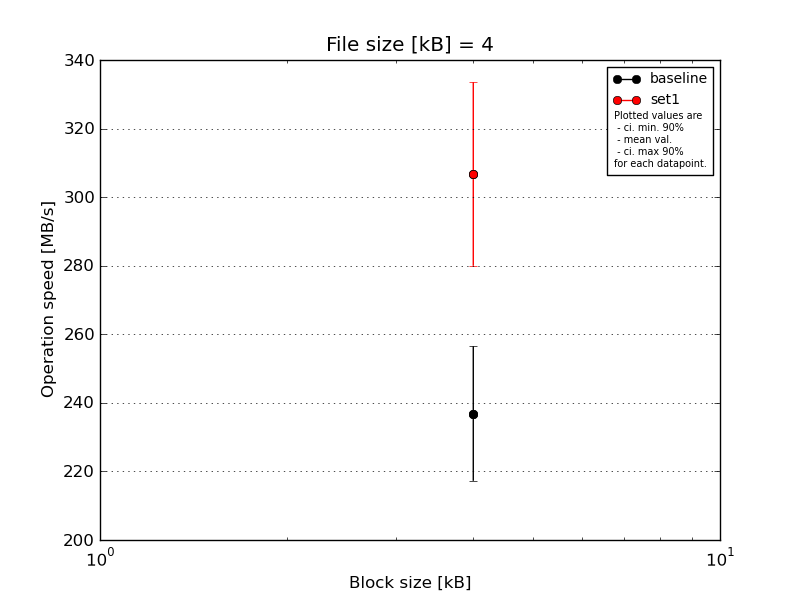
|
File size [kB] |
Block size [kB] |
| 4 |
| baseline | 4 | 241.63 |
| 4 | 231.39 |
| 4 | 260.87 |
| 4 | 245.25 |
| 4 | 205.3 |
| mean val. |
236.89 |
| standard dev. |
20.59 |
| ci. min. 90% |
217.26 |
| ci. max 90% |
256.52 |
| geom. mean |
236.15 |
| median |
241.63 |
| first quartile |
231.39 |
| third quartile |
245.25 |
| minimum |
205.3 |
| maximum |
260.87 |
| set1 | 4 | 322.48 |
| 4 | 328.96 |
| 4 | 298.95 |
| 4 | 322.48 |
| 4 | 260.87 |
| mean val. |
306.75 |
| standard dev. |
28.08 |
| ci. min. 90% |
279.97 |
| ci. max 90% |
333.52 |
| geom. mean |
305.66 |
| median |
322.48 |
| first quartile |
298.95 |
| third quartile |
322.48 |
| minimum |
260.87 |
| maximum |
328.96 |
| baseline set1 difference |
29.49 % |
| ttest p-value |
0.002 |
| ttest equality |
DIFF |

|
File size [kB] |
Block size [kB] |
| 4 |
8 |
| baseline | 8 | 410.6 | 243.08 |
| 8 | 373.19 | 312.65 |
| 8 | 373.19 | 391.0 |
| 8 | 260.46 | 386.39 |
| 8 | 260.46 | 325.06 |
| mean val. |
335.58 |
331.64 |
| standard dev. |
70.25 |
60.76 |
| ci. min. 90% |
268.6 |
273.71 |
| ci. max 90% |
402.56 |
389.57 |
| geom. mean |
329.42 |
326.88 |
| median |
373.19 |
325.06 |
| first quartile |
260.46 |
312.65 |
| third quartile |
373.19 |
386.39 |
| minimum |
260.46 |
243.08 |
| maximum |
410.6 |
391.0 |
| set1 | 8 | 462.79 | 521.74 |
| 8 | 338.49 | 483.26 |
| 8 | 338.49 | 47.37 |
| 8 | 373.19 | 391.0 |
| 8 | 373.19 | 391.0 |
| mean val. |
377.23 |
366.87 |
| standard dev. |
50.88 |
187.6 |
| ci. min. 90% |
328.72 |
188.01 |
| ci. max 90% |
425.74 |
545.73 |
| geom. mean |
374.69 |
283.33 |
| median |
373.19 |
391.0 |
| first quartile |
338.49 |
391.0 |
| third quartile |
373.19 |
483.26 |
| minimum |
338.49 |
47.37 |
| maximum |
462.79 |
521.74 |
| baseline set1 difference |
12.41 % |
10.63 % |
| ttest p-value |
0.3143 |
0.6999 |
| ttest equality |
SAME |
SAME |
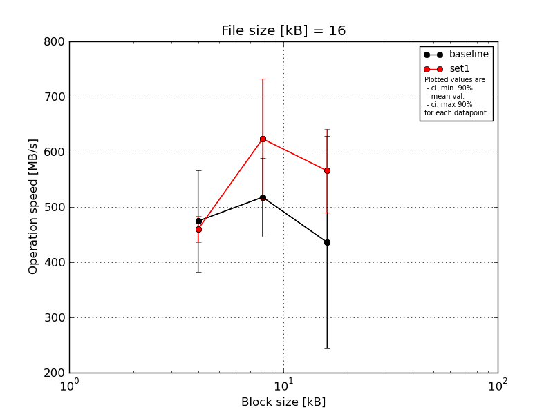
|
File size [kB] |
Block size [kB] |
| 4 |
8 |
16 |
| baseline | 16 | 575.86 | 602.32 | 97.12 |
| 16 | 434.57 | 458.92 | 446.41 |
| 16 | 580.96 | 596.84 | 458.92 |
| 16 | 400.08 | 472.14 | 596.84 |
| 16 | 381.45 | 458.92 | 580.96 |
| mean val. |
474.59 |
517.83 |
436.05 |
| standard dev. |
96.69 |
74.85 |
201.47 |
| ci. min. 90% |
382.4 |
446.47 |
243.97 |
| ci. max 90% |
566.77 |
589.19 |
628.13 |
| geom. mean |
466.9 |
513.62 |
369.62 |
| median |
434.57 |
472.14 |
458.92 |
| first quartile |
400.08 |
458.92 |
446.41 |
| third quartile |
575.86 |
596.84 |
580.96 |
| minimum |
381.45 |
458.92 |
97.12 |
| maximum |
580.96 |
602.32 |
596.84 |
| set1 | 16 | 486.15 | 746.38 | 538.04 |
| 16 | 486.15 | 676.98 | 542.49 |
| 16 | 446.41 | 472.14 | 706.16 |
| 16 | 434.57 | 684.05 | 520.93 |
| 16 | 446.41 | 538.04 | 520.93 |
| mean val. |
459.94 |
623.52 |
565.71 |
| standard dev. |
24.41 |
113.84 |
79.12 |
| ci. min. 90% |
436.67 |
514.98 |
490.27 |
| ci. max 90% |
483.21 |
732.05 |
641.15 |
| geom. mean |
459.43 |
614.75 |
561.74 |
| median |
446.41 |
676.98 |
538.04 |
| first quartile |
446.41 |
538.04 |
520.93 |
| third quartile |
486.15 |
684.05 |
542.49 |
| minimum |
434.57 |
472.14 |
520.93 |
| maximum |
486.15 |
746.38 |
706.16 |
| baseline set1 difference |
-3.09 % |
20.41 % |
29.74 % |
| ttest p-value |
0.751 |
0.121 |
0.2172 |
| ttest equality |
SAME |
SAME |
SAME |
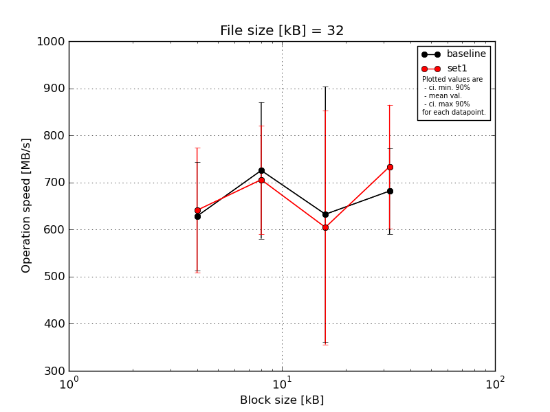
|
File size [kB] |
Block size [kB] |
| 4 |
8 |
16 |
32 |
| baseline | 32 | 762.91 | 869.14 | 825.36 | 805.08 |
| 32 | 504.5 | 528.93 | 167.87 | 590.93 |
| 32 | 613.04 | 781.09 | 820.2 | 636.87 |
| 32 | 520.53 | 601.78 | 548.86 | 613.04 |
| 32 | 741.33 | 846.69 | 800.17 | 762.91 |
| mean val. |
628.46 |
725.53 |
632.49 |
681.77 |
| standard dev. |
120.49 |
151.95 |
284.35 |
95.89 |
| ci. min. 90% |
513.59 |
580.66 |
361.4 |
590.35 |
| ci. max 90% |
743.33 |
870.4 |
903.59 |
773.19 |
| geom. mean |
619.24 |
711.99 |
549.08 |
676.52 |
| median |
613.04 |
781.09 |
800.17 |
636.87 |
| first quartile |
520.53 |
601.78 |
548.86 |
613.04 |
| third quartile |
741.33 |
846.69 |
820.2 |
762.91 |
| minimum |
504.5 |
528.93 |
167.87 |
590.93 |
| maximum |
762.91 |
869.14 |
825.36 |
805.08 |
| set1 | 32 | 580.46 | 679.81 | 191.68 | 892.83 |
| 32 | 781.09 | 652.73 | 917.83 | 679.81 |
| 32 | 531.07 | 917.83 | 636.87 | 613.04 |
| 32 | 800.17 | 666.0 | 639.98 | 869.14 |
| 32 | 512.39 | 613.04 | 636.87 | 613.04 |
| mean val. |
641.04 |
705.88 |
604.65 |
733.57 |
| standard dev. |
138.97 |
121.08 |
260.75 |
137.56 |
| ci. min. 90% |
508.55 |
590.45 |
356.06 |
602.43 |
| ci. max 90% |
773.53 |
821.32 |
853.24 |
864.72 |
| geom. mean |
629.34 |
698.51 |
539.41 |
723.51 |
| median |
580.46 |
666.0 |
636.87 |
679.81 |
| first quartile |
531.07 |
652.73 |
636.87 |
613.04 |
| third quartile |
781.09 |
679.81 |
639.98 |
869.14 |
| minimum |
512.39 |
613.04 |
191.68 |
613.04 |
| maximum |
800.17 |
917.83 |
917.83 |
892.83 |
| baseline set1 difference |
2.0 % |
-2.71 % |
-4.4 % |
7.6 % |
| ttest p-value |
0.8823 |
0.8268 |
0.8758 |
0.5092 |
| ttest equality |
SAME |
SAME |
SAME |
SAME |
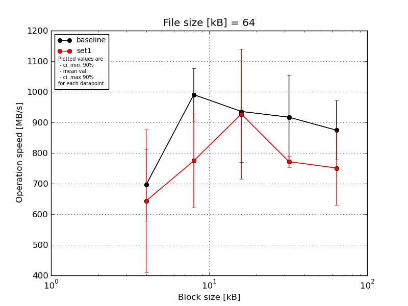
|
File size [kB] |
Block size [kB] |
| 4 |
8 |
16 |
32 |
64 |
| baseline | 64 | 790.05 | 1062.15 | 1116.43 | 1079.64 | 947.03 |
| 64 | 600.14 | 1024.78 | 745.14 | 792.44 | 695.7 |
| 64 | 865.72 | 1024.78 | 975.22 | 1041.06 | 904.55 |
| 64 | 612.76 | 1009.0 | 762.48 | 751.55 | 917.21 |
| 64 | 612.76 | 832.72 | 1079.64 | 920.43 | 907.68 |
| mean val. |
696.29 |
990.68 |
935.78 |
917.02 |
874.44 |
| standard dev. |
123.18 |
90.44 |
174.12 |
145.55 |
101.31 |
| ci. min. 90% |
578.85 |
904.45 |
769.78 |
778.25 |
777.84 |
| ci. max 90% |
813.73 |
1076.91 |
1101.78 |
1055.79 |
971.03 |
| geom. mean |
687.98 |
987.11 |
922.43 |
907.68 |
869.21 |
| median |
612.76 |
1024.78 |
975.22 |
920.43 |
907.68 |
| first quartile |
612.76 |
1009.0 |
762.48 |
792.44 |
904.55 |
| third quartile |
790.05 |
1024.78 |
1079.64 |
1041.06 |
917.21 |
| minimum |
600.14 |
832.72 |
745.14 |
751.55 |
695.7 |
| maximum |
865.72 |
1062.15 |
1116.43 |
1079.64 |
947.03 |
| set1 | 64 | 547.5 | 710.79 | 780.64 | 771.45 | 716.62 |
| 64 | 314.02 | 703.17 | 1160.93 | 802.14 | 975.22 |
| 64 | 880.25 | 701.28 | 753.71 | 762.48 | 672.5 |
| 64 | 584.09 | 1062.15 | 760.27 | 751.55 | 695.7 |
| 64 | 892.24 | 695.7 | 1181.86 | 771.45 | 693.86 |
| mean val. |
643.62 |
774.62 |
927.48 |
771.81 |
750.78 |
| standard dev. |
244.55 |
160.82 |
223.01 |
18.83 |
126.43 |
| ci. min. 90% |
410.46 |
621.29 |
714.87 |
753.86 |
630.24 |
| ci. max 90% |
876.77 |
927.95 |
1140.09 |
789.76 |
871.32 |
| geom. mean |
601.7 |
763.24 |
906.98 |
771.63 |
743.28 |
| median |
584.09 |
703.17 |
780.64 |
771.45 |
695.7 |
| first quartile |
547.5 |
701.28 |
760.27 |
762.48 |
693.86 |
| third quartile |
880.25 |
710.79 |
1160.93 |
771.45 |
716.62 |
| minimum |
314.02 |
695.7 |
753.71 |
751.55 |
672.5 |
| maximum |
892.24 |
1062.15 |
1181.86 |
802.14 |
975.22 |
| baseline set1 difference |
-7.56 % |
-21.81 % |
-0.89 % |
-15.83 % |
-14.14 % |
| ttest p-value |
0.6785 |
0.0307 |
0.9493 |
0.0579 |
0.1263 |
| ttest equality |
SAME |
DIFF |
SAME |
DIFF |
SAME |

|
File size [kB] |
Block size [kB] |
| 4 |
8 |
16 |
32 |
64 |
128 |
| baseline | 128 | 1000.92 | 1006.69 | 1106.55 | 1314.64 | 1051.09 | 891.94 |
| 128 | 985.86 | 805.6 | 862.59 | 1304.83 | 868.31 | 753.5 |
| 128 | 933.22 | 1088.17 | 1048.98 | 1263.94 | 1214.17 | 920.12 |
| 128 | 645.03 | 1008.62 | 879.96 | 578.81 | 816.89 | 993.33 |
| 128 | 370.83 | 801.9 | 879.96 | 861.17 | 874.1 | 955.33 |
| mean val. |
787.17 |
942.2 |
955.61 |
1064.68 |
964.91 |
902.84 |
| standard dev. |
273.88 |
130.6 |
113.58 |
330.66 |
165.11 |
91.74 |
| ci. min. 90% |
526.06 |
817.69 |
847.33 |
749.43 |
807.5 |
815.38 |
| ci. max 90% |
1048.29 |
1066.71 |
1063.89 |
1379.93 |
1122.33 |
990.31 |
| geom. mean |
738.91 |
934.79 |
950.37 |
1015.65 |
954.25 |
898.88 |
| median |
933.22 |
1006.69 |
879.96 |
1263.94 |
874.1 |
920.12 |
| first quartile |
645.03 |
805.6 |
879.96 |
861.17 |
868.31 |
891.94 |
| third quartile |
985.86 |
1008.62 |
1048.98 |
1304.83 |
1051.09 |
955.33 |
| minimum |
370.83 |
801.9 |
862.59 |
578.81 |
816.89 |
753.5 |
| maximum |
1000.92 |
1088.17 |
1106.55 |
1314.64 |
1214.17 |
993.33 |
| set1 | 128 | 612.63 | 1203.03 | 437.34 | 1327.96 | 828.51 | 739.68 |
| 128 | 352.15 | 1200.28 | 672.33 | 730.4 | 443.26 | 641.09 |
| 128 | 600.69 | 628.04 | 816.89 | 404.6 | 1200.28 | 634.11 |
| 128 | 578.17 | 473.27 | 1288.79 | 687.31 | 718.39 | 683.73 |
| 128 | 548.53 | 1008.62 | 682.84 | 709.64 | 518.68 | 324.67 |
| mean val. |
538.43 |
902.65 |
779.64 |
771.99 |
741.82 |
604.66 |
| standard dev. |
106.96 |
335.34 |
315.7 |
337.96 |
298.82 |
162.07 |
| ci. min. 90% |
436.46 |
582.93 |
478.65 |
449.78 |
456.93 |
450.14 |
| ci. max 90% |
640.41 |
1222.36 |
1080.63 |
1094.19 |
1026.72 |
759.17 |
| geom. mean |
528.16 |
845.81 |
732.85 |
718.45 |
696.79 |
581.96 |
| median |
578.17 |
1008.62 |
682.84 |
709.64 |
718.39 |
641.09 |
| first quartile |
548.53 |
628.04 |
672.33 |
687.31 |
518.68 |
634.11 |
| third quartile |
600.69 |
1200.28 |
816.89 |
730.4 |
828.51 |
683.73 |
| minimum |
352.15 |
473.27 |
437.34 |
404.6 |
443.26 |
324.67 |
| maximum |
612.63 |
1203.03 |
1288.79 |
1327.96 |
1200.28 |
739.68 |
| baseline set1 difference |
-31.6 % |
-4.2 % |
-18.41 % |
-27.49 % |
-23.12 % |
-33.03 % |
| ttest p-value |
0.0952 |
0.8121 |
0.2746 |
0.2037 |
0.1821 |
0.0072 |
| ttest equality |
DIFF |
SAME |
SAME |
SAME |
SAME |
DIFF |
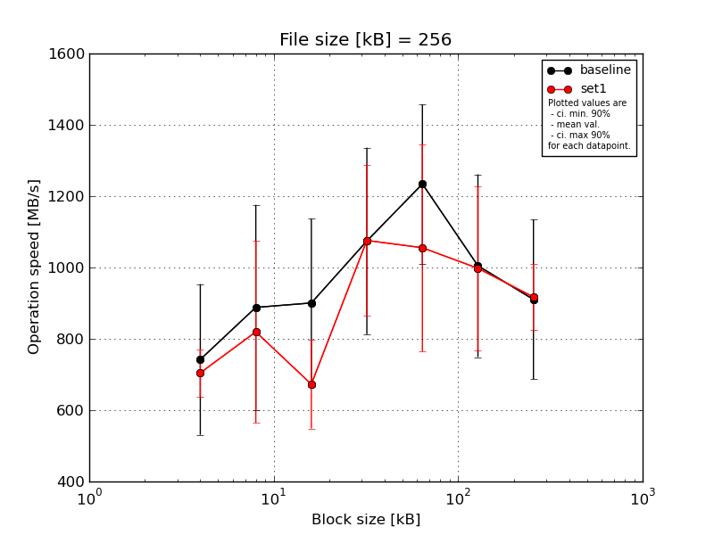
|
File size [kB] |
Block size [kB] |
| 4 |
8 |
16 |
32 |
64 |
128 |
256 |
| baseline | 256 | 980.16 | 1156.34 | 1282.18 | 698.67 | 1452.71 | 1322.61 | 1115.74 |
| 256 | 502.96 | 565.63 | 619.06 | 987.54 | 1012.33 | 611.13 | 555.45 |
| 256 | 971.98 | 1248.59 | 759.94 | 1302.89 | 1358.6 | 1162.75 | 1024.19 |
| 256 | 583.9 | 809.21 | 919.15 | 1381.88 | 950.83 | 915.94 | 1068.01 |
| 256 | 671.82 | 661.23 | 922.39 | 1000.73 | 1396.6 | 1012.33 | 788.52 |
| mean val. |
742.16 |
888.2 |
900.55 |
1074.34 |
1234.21 |
1004.95 |
910.38 |
| standard dev. |
221.74 |
301.49 |
247.72 |
274.27 |
234.05 |
268.74 |
234.95 |
| ci. min. 90% |
530.76 |
600.76 |
664.37 |
812.86 |
1011.07 |
748.74 |
686.38 |
| ci. max 90% |
953.56 |
1175.64 |
1136.72 |
1335.83 |
1457.36 |
1261.17 |
1134.38 |
| geom. mean |
715.84 |
847.4 |
874.49 |
1044.49 |
1215.49 |
972.85 |
882.26 |
| median |
671.82 |
809.21 |
919.15 |
1000.73 |
1358.6 |
1012.33 |
1024.19 |
| first quartile |
583.9 |
661.23 |
759.94 |
987.54 |
1012.33 |
915.94 |
788.52 |
| third quartile |
971.98 |
1156.34 |
922.39 |
1302.89 |
1396.6 |
1162.75 |
1068.01 |
| minimum |
502.96 |
565.63 |
619.06 |
698.67 |
950.83 |
611.13 |
555.45 |
| maximum |
980.16 |
1248.59 |
1282.18 |
1381.88 |
1452.71 |
1322.61 |
1115.74 |
| set1 | 256 | 783.8 | 626.84 | 624.97 | 1063.67 | 1322.61 | 681.42 | 972.88 |
| 256 | 710.03 | 804.24 | 609.71 | 1462.84 | 631.37 | 1309.4 | 831.01 |
| 256 | 704.31 | 1256.07 | 617.24 | 969.28 | 1381.88 | 922.39 | 1059.38 |
| 256 | 593.82 | 577.47 | 606.53 | 961.29 | 968.39 | 1152.53 | 849.87 |
| 256 | 731.32 | 832.99 | 905.66 | 922.39 | 972.88 | 923.2 | 873.95 |
| mean val. |
704.66 |
819.52 |
672.82 |
1075.89 |
1055.42 |
997.79 |
917.42 |
| standard dev. |
69.44 |
267.73 |
130.35 |
222.46 |
305.03 |
241.03 |
96.37 |
| ci. min. 90% |
638.45 |
564.28 |
548.54 |
863.81 |
764.61 |
767.99 |
825.54 |
| ci. max 90% |
770.86 |
1074.77 |
797.1 |
1287.98 |
1346.24 |
1227.58 |
1009.29 |
| geom. mean |
701.78 |
788.4 |
664.13 |
1059.85 |
1016.85 |
973.8 |
913.51 |
| median |
710.03 |
804.24 |
617.24 |
969.28 |
972.88 |
923.2 |
873.95 |
| first quartile |
704.31 |
626.84 |
609.71 |
961.29 |
968.39 |
922.39 |
849.87 |
| third quartile |
731.32 |
832.99 |
624.97 |
1063.67 |
1322.61 |
1152.53 |
972.88 |
| minimum |
593.82 |
577.47 |
606.53 |
922.39 |
631.37 |
681.42 |
831.01 |
| maximum |
783.8 |
1256.07 |
905.66 |
1462.84 |
1381.88 |
1309.4 |
1059.38 |
| baseline set1 difference |
-5.05 % |
-7.73 % |
-25.29 % |
0.14 % |
-14.49 % |
-0.71 % |
0.77 % |
| ttest p-value |
0.7275 |
0.7132 |
0.1064 |
0.9924 |
0.3288 |
0.9657 |
0.9521 |
| ttest equality |
SAME |
SAME |
SAME |
SAME |
SAME |
SAME |
SAME |
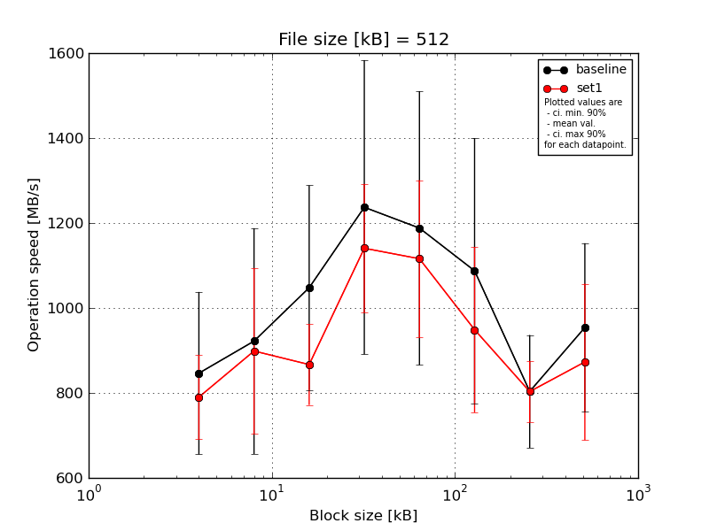
|
File size [kB] |
Block size [kB] |
| 4 |
8 |
16 |
32 |
64 |
128 |
256 |
512 |
| baseline | 512 | 1080.0 | 1344.5 | 1465.71 | 1592.61 | 1586.58 | 1497.1 | 986.06 | 1123.99 |
| 512 | 1033.18 | 997.79 | 1037.27 | 884.95 | 792.33 | 782.58 | 613.6 | 711.19 |
| 512 | 787.57 | 924.34 | 978.69 | 1487.55 | 1484.39 | 1358.43 | 875.71 | 1100.98 |
| 512 | 703.32 | 645.91 | 974.6 | 1412.41 | 970.99 | 1009.8 | 793.83 | 1091.81 |
| 512 | 628.3 | 697.47 | 782.28 | 807.9 | 1106.21 | 789.95 | 748.5 | 741.88 |
| mean val. |
846.47 |
922.0 |
1047.71 |
1237.08 |
1188.1 |
1087.57 |
803.54 |
953.97 |
| standard dev. |
200.6 |
278.79 |
252.68 |
363.34 |
338.03 |
327.39 |
139.39 |
208.23 |
| ci. min. 90% |
655.23 |
656.21 |
806.81 |
890.68 |
865.83 |
775.44 |
670.64 |
755.44 |
| ci. max 90% |
1037.72 |
1187.79 |
1288.62 |
1583.49 |
1510.37 |
1399.7 |
936.44 |
1152.5 |
| geom. mean |
827.64 |
890.07 |
1025.55 |
1190.59 |
1149.19 |
1048.89 |
793.62 |
934.55 |
| median |
787.57 |
924.34 |
978.69 |
1412.41 |
1106.21 |
1009.8 |
793.83 |
1091.81 |
| first quartile |
703.32 |
697.47 |
974.6 |
884.95 |
970.99 |
789.95 |
748.5 |
741.88 |
| third quartile |
1033.18 |
997.79 |
1037.27 |
1487.55 |
1484.39 |
1358.43 |
875.71 |
1100.98 |
| minimum |
628.3 |
645.91 |
782.28 |
807.9 |
792.33 |
782.58 |
613.6 |
711.19 |
| maximum |
1080.0 |
1344.5 |
1465.71 |
1592.61 |
1586.58 |
1497.1 |
986.06 |
1123.99 |
| set1 | 512 | 742.93 | 892.86 | 954.2 | 1039.84 | 1278.9 | 1187.65 | 881.6 | 1048.15 |
| 512 | 941.78 | 786.1 | 844.67 | 1162.63 | 1184.96 | 778.8 | 846.03 | 745.04 |
| 512 | 665.8 | 1022.6 | 969.2 | 1165.86 | 1163.27 | 1149.25 | 844.33 | 1096.37 |
| 512 | 834.58 | 1160.05 | 843.31 | 1377.16 | 778.8 | 862.03 | 720.47 | 826.69 |
| 512 | 765.72 | 632.09 | 722.71 | 957.69 | 1173.69 | 766.84 | 723.7 | 648.51 |
| mean val. |
790.16 |
898.74 |
866.82 |
1140.63 |
1115.92 |
948.91 |
803.23 |
872.95 |
| standard dev. |
103.99 |
204.6 |
99.91 |
158.66 |
194.01 |
204.19 |
75.56 |
193.32 |
| ci. min. 90% |
691.02 |
703.67 |
771.56 |
989.37 |
930.96 |
754.24 |
731.19 |
688.65 |
| ci. max 90% |
889.3 |
1093.81 |
962.07 |
1291.9 |
1300.89 |
1143.58 |
875.26 |
1057.26 |
| geom. mean |
784.79 |
879.52 |
862.06 |
1132.01 |
1100.12 |
931.86 |
800.33 |
855.78 |
| median |
765.72 |
892.86 |
844.67 |
1162.63 |
1173.69 |
862.03 |
844.33 |
826.69 |
| first quartile |
742.93 |
786.1 |
843.31 |
1039.84 |
1163.27 |
778.8 |
723.7 |
745.04 |
| third quartile |
834.58 |
1022.6 |
954.2 |
1165.86 |
1184.96 |
1149.25 |
846.03 |
1048.15 |
| minimum |
665.8 |
632.09 |
722.71 |
957.69 |
778.8 |
766.84 |
720.47 |
648.51 |
| maximum |
941.78 |
1160.05 |
969.2 |
1377.16 |
1278.9 |
1187.65 |
881.6 |
1096.37 |
| baseline set1 difference |
-6.65 % |
-2.52 % |
-17.27 % |
-7.8 % |
-6.07 % |
-12.75 % |
-0.04 % |
-8.49 % |
| ttest p-value |
0.5926 |
0.8842 |
0.1749 |
0.6013 |
0.6897 |
0.4449 |
0.9966 |
0.5416 |
| ttest equality |
SAME |
SAME |
SAME |
SAME |
SAME |
SAME |
SAME |
SAME |
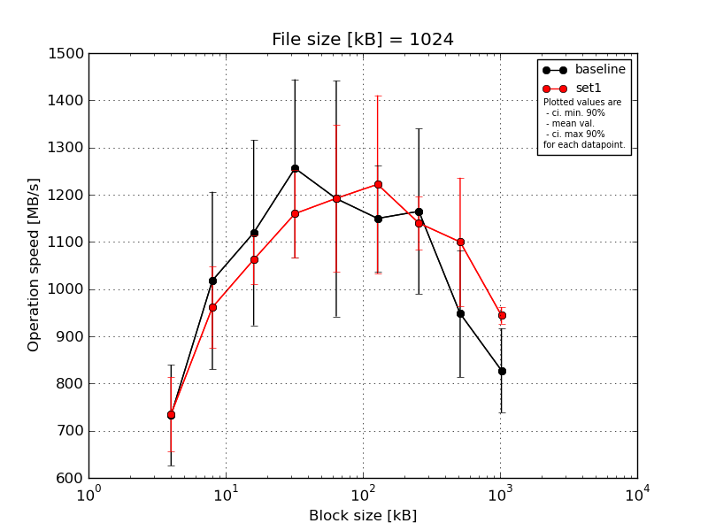
|
File size [kB] |
Block size [kB] |
| 4 |
8 |
16 |
32 |
64 |
128 |
256 |
512 |
1024 |
| baseline | 1024 | 813.04 | 1342.26 | 1237.69 | 1329.92 | 1319.04 | 1317.39 | 1248.38 | 1155.83 | 960.5 |
| 1024 | 661.79 | 956.99 | 1028.82 | 1062.71 | 1092.89 | 1081.06 | 1070.57 | 979.33 | 843.79 |
| 1024 | 889.6 | 1056.02 | 1422.86 | 1529.2 | 1567.49 | 1231.88 | 1449.41 | 950.48 | 828.62 |
| 1024 | 658.36 | 853.92 | 941.52 | 1295.42 | 1102.66 | 1064.87 | 1041.6 | 885.1 | 807.09 |
| 1024 | 641.45 | 881.93 | 966.03 | 1062.71 | 876.4 | 1053.63 | 1014.14 | 770.47 | 698.84 |
| mean val. |
732.85 |
1018.22 |
1119.38 |
1255.99 |
1191.7 |
1149.76 |
1164.82 |
948.24 |
827.77 |
| standard dev. |
111.75 |
197.32 |
205.82 |
197.72 |
261.98 |
118.33 |
183.54 |
141.12 |
93.44 |
| ci. min. 90% |
626.31 |
830.1 |
923.16 |
1067.48 |
941.93 |
1036.95 |
989.84 |
813.71 |
738.68 |
| ci. max 90% |
839.39 |
1206.35 |
1315.61 |
1444.5 |
1441.47 |
1262.58 |
1339.8 |
1082.78 |
916.85 |
| geom. mean |
726.32 |
1004.28 |
1105.06 |
1243.67 |
1169.06 |
1145.05 |
1153.96 |
939.95 |
823.52 |
| median |
661.79 |
956.99 |
1028.82 |
1295.42 |
1102.66 |
1081.06 |
1070.57 |
950.48 |
828.62 |
| first quartile |
658.36 |
881.93 |
966.03 |
1062.71 |
1092.89 |
1064.87 |
1041.6 |
885.1 |
807.09 |
| third quartile |
813.04 |
1056.02 |
1237.69 |
1329.92 |
1319.04 |
1231.88 |
1248.38 |
979.33 |
843.79 |
| minimum |
641.45 |
853.92 |
941.52 |
1062.71 |
876.4 |
1053.63 |
1014.14 |
770.47 |
698.84 |
| maximum |
889.6 |
1342.26 |
1422.86 |
1529.2 |
1567.49 |
1317.39 |
1449.41 |
1155.83 |
960.5 |
| set1 | 1024 | 825.68 | 1067.31 | 1082.18 | 1301.85 | 1154.88 | 1567.49 | 1237.69 | 1351.34 | 972.75 |
| 1024 | 766.39 | 938.15 | 1148.24 | 1089.2 | 1123.63 | 1119.73 | 1097.75 | 1026.81 | 936.48 |
| 1024 | 786.8 | 838.22 | 1011.21 | 1088.07 | 1106.15 | 1114.67 | 1156.15 | 1017.34 | 937.11 |
| 1024 | 644.3 | 931.07 | 1034.15 | 1097.75 | 1481.66 | 1098.9 | 1096.61 | 1024.55 | 924.3 |
| 1024 | 651.92 | 1032.11 | 1036.19 | 1222.54 | 1095.17 | 1209.15 | 1111.13 | 1079.67 | 950.48 |
| mean val. |
735.02 |
961.37 |
1062.39 |
1159.88 |
1192.3 |
1221.99 |
1139.87 |
1099.94 |
944.22 |
| standard dev. |
82.19 |
90.62 |
54.46 |
97.59 |
163.33 |
197.9 |
59.8 |
142.71 |
18.44 |
| ci. min. 90% |
656.66 |
874.98 |
1010.47 |
1066.84 |
1036.59 |
1033.31 |
1082.85 |
963.88 |
926.64 |
| ci. max 90% |
813.38 |
1047.77 |
1114.32 |
1252.92 |
1348.01 |
1410.67 |
1196.88 |
1236.0 |
961.81 |
| geom. mean |
731.28 |
957.91 |
1061.3 |
1156.69 |
1184.25 |
1210.55 |
1138.65 |
1093.22 |
944.08 |
| median |
766.39 |
938.15 |
1036.19 |
1097.75 |
1123.63 |
1119.73 |
1111.13 |
1026.81 |
937.11 |
| first quartile |
651.92 |
931.07 |
1034.15 |
1089.2 |
1106.15 |
1114.67 |
1097.75 |
1024.55 |
936.48 |
| third quartile |
786.8 |
1032.11 |
1082.18 |
1222.54 |
1154.88 |
1209.15 |
1156.15 |
1079.67 |
950.48 |
| minimum |
644.3 |
838.22 |
1011.21 |
1088.07 |
1095.17 |
1098.9 |
1096.61 |
1017.34 |
924.3 |
| maximum |
825.68 |
1067.31 |
1148.24 |
1301.85 |
1481.66 |
1567.49 |
1237.69 |
1351.34 |
972.75 |
| baseline set1 difference |
0.3 % |
-5.58 % |
-5.09 % |
-7.65 % |
0.05 % |
6.28 % |
-2.14 % |
16.0 % |
14.07 % |
| ttest p-value |
0.9729 |
0.5744 |
0.566 |
0.3583 |
0.9966 |
0.5035 |
0.7799 |
0.1295 |
0.0257 |
| ttest equality |
SAME |
SAME |
SAME |
SAME |
SAME |
SAME |
SAME |
SAME |
DIFF |
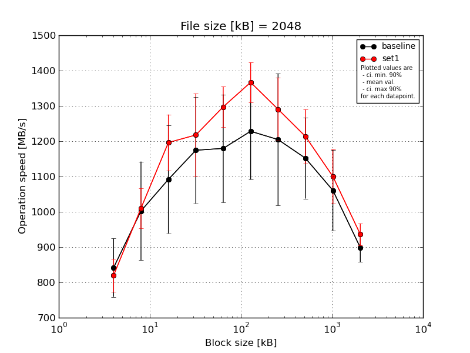
|
File size [kB] |
Block size [kB] |
| 4 |
8 |
16 |
32 |
64 |
128 |
256 |
512 |
1024 |
2048 |
| baseline | 2048 | 931.98 | 1130.57 | 1339.65 | 1407.53 | 1329.03 | 1326.3 | 1428.62 | 1257.13 | 1247.78 | 969.02 |
| 2048 | 885.73 | 1011.19 | 981.38 | 1038.99 | 1064.98 | 1060.0 | 1160.12 | 1038.99 | 994.99 | 878.31 |
| 2048 | 892.52 | 1162.21 | 1168.2 | 1251.51 | 1372.75 | 1255.44 | 1353.04 | 1293.58 | 1108.61 | 906.99 |
| 2048 | 758.68 | 855.04 | 1000.93 | 1033.1 | 1110.51 | 1393.73 | 1152.79 | 1132.55 | 1009.12 | 883.03 |
| 2048 | 739.36 | 853.21 | 969.02 | 1140.87 | 1020.91 | 1105.54 | 928.58 | 1036.81 | 943.41 | 856.52 |
| mean val. |
841.65 |
1002.44 |
1091.83 |
1174.4 |
1179.64 |
1228.2 |
1204.63 |
1151.81 |
1060.78 |
898.78 |
| standard dev. |
86.66 |
146.64 |
160.3 |
157.89 |
160.26 |
142.4 |
195.62 |
119.91 |
120.45 |
43.17 |
| ci. min. 90% |
759.04 |
862.63 |
939.0 |
1023.87 |
1026.85 |
1092.44 |
1018.13 |
1037.49 |
945.95 |
857.62 |
| ci. max 90% |
924.27 |
1142.25 |
1244.67 |
1324.93 |
1332.43 |
1363.96 |
1391.14 |
1266.14 |
1175.62 |
939.93 |
| geom. mean |
838.01 |
993.78 |
1082.97 |
1166.21 |
1171.1 |
1221.52 |
1191.41 |
1146.85 |
1055.54 |
897.97 |
| median |
885.73 |
1011.19 |
1000.93 |
1140.87 |
1110.51 |
1255.44 |
1160.12 |
1132.55 |
1009.12 |
883.03 |
| first quartile |
758.68 |
855.04 |
981.38 |
1038.99 |
1064.98 |
1105.54 |
1152.79 |
1038.99 |
994.99 |
878.31 |
| third quartile |
892.52 |
1130.57 |
1168.2 |
1251.51 |
1329.03 |
1326.3 |
1353.04 |
1257.13 |
1108.61 |
906.99 |
| minimum |
739.36 |
853.21 |
969.02 |
1033.1 |
1020.91 |
1060.0 |
928.58 |
1036.81 |
943.41 |
856.52 |
| maximum |
931.98 |
1162.21 |
1339.65 |
1407.53 |
1372.75 |
1393.73 |
1428.62 |
1293.58 |
1247.78 |
969.02 |
| set1 | 2048 | 893.28 | 1083.97 | 1322.75 | 1406.59 | 1324.42 | 1327.14 | 1433.51 | 1252.44 | 1154.06 | 974.65 |
| 2048 | 783.04 | 995.58 | 1202.01 | 1179.37 | 1345.88 | 1283.68 | 1305.46 | 1314.25 | 1069.59 | 951.0 |
| 2048 | 767.78 | 926.83 | 1090.59 | 1076.46 | 1193.97 | 1392.81 | 1220.91 | 1196.18 | 1028.8 | 931.98 |
| 2048 | 836.78 | 997.95 | 1175.24 | 1170.97 | 1315.07 | 1423.53 | 1299.39 | 1208.42 | 1212.08 | 887.23 |
| 2048 | 817.3 | 1047.03 | 1190.58 | 1254.69 | 1307.9 | 1406.35 | 1193.29 | 1096.43 | 1035.66 | 936.77 |
| mean val. |
819.64 |
1010.27 |
1196.23 |
1217.61 |
1297.45 |
1366.7 |
1290.51 |
1213.55 |
1100.04 |
936.33 |
| standard dev. |
49.37 |
59.4 |
83.18 |
123.14 |
59.58 |
59.04 |
93.6 |
80.15 |
80.03 |
32.07 |
| ci. min. 90% |
772.57 |
953.65 |
1116.93 |
1100.22 |
1240.64 |
1310.42 |
1201.27 |
1137.13 |
1023.74 |
905.75 |
| ci. max 90% |
866.71 |
1066.9 |
1275.53 |
1335.01 |
1354.25 |
1422.99 |
1379.75 |
1289.96 |
1176.34 |
966.9 |
| geom. mean |
818.47 |
1008.87 |
1193.95 |
1212.77 |
1296.31 |
1365.67 |
1287.85 |
1211.4 |
1097.75 |
935.88 |
| median |
817.3 |
997.95 |
1190.58 |
1179.37 |
1315.07 |
1392.81 |
1299.39 |
1208.42 |
1069.59 |
936.77 |
| first quartile |
783.04 |
995.58 |
1175.24 |
1170.97 |
1307.9 |
1327.14 |
1220.91 |
1196.18 |
1035.66 |
931.98 |
| third quartile |
836.78 |
1047.03 |
1202.01 |
1254.69 |
1324.42 |
1406.35 |
1305.46 |
1252.44 |
1154.06 |
951.0 |
| minimum |
767.78 |
926.83 |
1090.59 |
1076.46 |
1193.97 |
1283.68 |
1193.29 |
1096.43 |
1028.8 |
887.23 |
| maximum |
893.28 |
1083.97 |
1322.75 |
1406.59 |
1345.88 |
1423.53 |
1433.51 |
1314.25 |
1212.08 |
974.65 |
| baseline set1 difference |
-2.62 % |
0.78 % |
9.56 % |
3.68 % |
9.99 % |
11.28 % |
7.13 % |
5.36 % |
3.7 % |
4.18 % |
| ttest p-value |
0.6348 |
0.9146 |
0.2322 |
0.6423 |
0.1619 |
0.0794 |
0.4017 |
0.3666 |
0.5607 |
0.157 |
| ttest equality |
SAME |
SAME |
SAME |
SAME |
SAME |
DIFF |
SAME |
SAME |
SAME |
SAME |
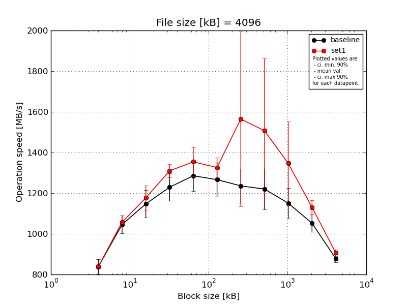
|
File size [kB] |
Block size [kB] |
| 4 |
8 |
16 |
32 |
64 |
128 |
256 |
512 |
1024 |
2048 |
4096 |
| baseline | 4096 | 882.42 | 1112.04 | 1267.37 | 1322.73 | 1407.39 | 1397.66 | 1384.05 | 1346.4 | 1278.77 | 1129.64 | 899.88 |
| 4096 | 804.63 | 1035.2 | 1110.79 | 1177.86 | 1274.3 | 1195.83 | 1157.38 | 1169.97 | 1094.06 | 1033.03 | 867.32 |
| 4096 | 862.59 | 1041.36 | 1147.8 | 1289.09 | 1314.95 | 1317.53 | 1230.38 | 1305.54 | 1173.66 | 1046.3 | 863.92 |
| 4096 | 790.83 | 983.26 | 1118.27 | 1177.12 | 1200.79 | 1215.84 | 1224.36 | 1192.26 | 1098.29 | 1017.31 | 861.88 |
| 4096 | 852.68 | 1057.98 | 1091.43 | 1179.27 | 1231.19 | 1205.88 | 1183.09 | 1086.34 | 1108.67 | 1036.28 | 899.06 |
| mean val. |
838.63 |
1045.97 |
1147.13 |
1229.21 |
1285.72 |
1266.55 |
1235.85 |
1220.1 |
1150.69 |
1052.51 |
878.41 |
| standard dev. |
39.15 |
46.31 |
70.2 |
71.02 |
80.58 |
88.09 |
88.13 |
105.39 |
78.5 |
44.36 |
19.32 |
| ci. min. 90% |
801.31 |
1001.81 |
1080.2 |
1161.5 |
1208.9 |
1182.56 |
1151.83 |
1119.62 |
1075.84 |
1010.22 |
859.99 |
| ci. max 90% |
875.95 |
1090.12 |
1214.06 |
1296.92 |
1362.55 |
1350.54 |
1319.87 |
1320.58 |
1225.53 |
1094.8 |
896.84 |
| geom. mean |
837.89 |
1045.15 |
1145.48 |
1227.6 |
1283.74 |
1264.16 |
1233.44 |
1216.45 |
1148.62 |
1051.79 |
878.24 |
| median |
852.68 |
1041.36 |
1118.27 |
1179.27 |
1274.3 |
1215.84 |
1224.36 |
1192.26 |
1108.67 |
1036.28 |
867.32 |
| first quartile |
804.63 |
1035.2 |
1110.79 |
1177.86 |
1231.19 |
1205.88 |
1183.09 |
1169.97 |
1098.29 |
1033.03 |
863.92 |
| third quartile |
862.59 |
1057.98 |
1147.8 |
1289.09 |
1314.95 |
1317.53 |
1230.38 |
1305.54 |
1173.66 |
1046.3 |
899.06 |
| minimum |
790.83 |
983.26 |
1091.43 |
1177.12 |
1200.79 |
1195.83 |
1157.38 |
1086.34 |
1094.06 |
1017.31 |
861.88 |
| maximum |
882.42 |
1112.04 |
1267.37 |
1322.73 |
1407.39 |
1397.66 |
1384.05 |
1346.4 |
1278.77 |
1129.64 |
899.88 |
| set1 | 4096 | 850.35 | 1084.3 | 1270.63 | 1356.41 | 1477.54 | 1395.68 | 1390.36 | 1380.75 | 1313.2 | 1185.18 | 921.43 |
| 4096 | 842.62 | 1075.27 | 1101.6 | 1294.06 | 1275.56 | 1253.17 | 1384.97 | 1308.49 | 1250.0 | 1101.89 | 913.65 |
| 4096 | 825.58 | 1083.39 | 1139.31 | 1284.55 | 1357.29 | 1316.19 | 2368.39 | 2170.46 | 1714.62 | 1104.94 | 897.23 |
| 4096 | 840.34 | 1007.29 | 1183.84 | 1281.21 | 1324.5 | 1342.73 | 1350.95 | 1358.28 | 1153.09 | 1107.42 | 881.81 |
| 4096 | 836.15 | 1036.79 | 1189.47 | 1332.5 | 1335.04 | 1322.73 | 1329.75 | 1316.29 | 1300.48 | 1152.45 | 920.17 |
| mean val. |
839.01 |
1057.41 |
1176.97 |
1309.74 |
1353.99 |
1326.1 |
1564.88 |
1506.85 |
1346.28 |
1130.38 |
906.86 |
| standard dev. |
9.11 |
34.11 |
63.39 |
33.13 |
75.26 |
51.35 |
449.86 |
372.16 |
215.33 |
37.0 |
17.0 |
| ci. min. 90% |
830.32 |
1024.89 |
1116.53 |
1278.16 |
1282.24 |
1277.15 |
1135.99 |
1152.04 |
1140.99 |
1095.1 |
890.66 |
| ci. max 90% |
847.69 |
1089.93 |
1237.41 |
1341.33 |
1425.74 |
1375.06 |
1993.78 |
1861.67 |
1551.57 |
1165.65 |
923.06 |
| geom. mean |
838.97 |
1056.96 |
1175.62 |
1309.41 |
1352.36 |
1325.3 |
1522.95 |
1476.24 |
1333.75 |
1129.9 |
906.73 |
| median |
840.34 |
1075.27 |
1183.84 |
1294.06 |
1335.04 |
1322.73 |
1384.97 |
1358.28 |
1300.48 |
1107.42 |
913.65 |
| first quartile |
836.15 |
1036.79 |
1139.31 |
1284.55 |
1324.5 |
1316.19 |
1350.95 |
1316.29 |
1250.0 |
1104.94 |
897.23 |
| third quartile |
842.62 |
1083.39 |
1189.47 |
1332.5 |
1357.29 |
1342.73 |
1390.36 |
1380.75 |
1313.2 |
1152.45 |
920.17 |
| minimum |
825.58 |
1007.29 |
1101.6 |
1281.21 |
1275.56 |
1253.17 |
1329.75 |
1308.49 |
1153.09 |
1101.89 |
881.81 |
| maximum |
850.35 |
1084.3 |
1270.63 |
1356.41 |
1477.54 |
1395.68 |
2368.39 |
2170.46 |
1714.62 |
1185.18 |
921.43 |
| baseline set1 difference |
0.05 % |
1.09 % |
2.6 % |
6.55 % |
5.31 % |
4.7 % |
26.62 % |
23.5 % |
17.0 % |
7.4 % |
3.24 % |
| ttest p-value |
0.9837 |
0.6683 |
0.5006 |
0.0506 |
0.2036 |
0.2279 |
0.1472 |
0.136 |
0.0928 |
0.0167 |
0.0386 |
| ttest equality |
SAME |
SAME |
SAME |
DIFF |
SAME |
SAME |
SAME |
SAME |
DIFF |
DIFF |
DIFF |
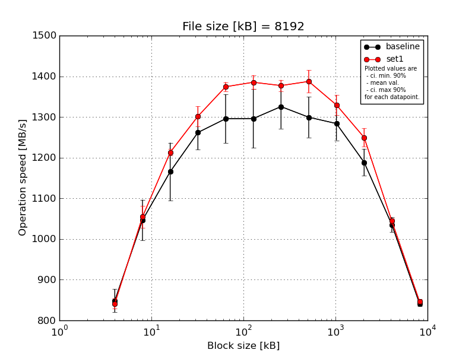
|
File size [kB] |
Block size [kB] |
| 4 |
8 |
16 |
32 |
64 |
128 |
256 |
512 |
1024 |
2048 |
4096 |
8192 |
| baseline | 8192 | 894.26 | 1122.15 | 1251.01 | 1314.07 | 1388.85 | 1387.93 | 1399.34 | 1377.85 | 1345.42 | 1248.64 | 1062.7 | 837.44 |
| 8192 | 850.52 | 1022.76 | 1125.47 | 1241.66 | 1275.75 | 1280.62 | 1325.59 | 1275.26 | 1273.47 | 1172.67 | 1015.98 | 838.65 |
| 8192 | 853.33 | 1079.62 | 1209.18 | 1284.09 | 1327.16 | 1360.53 | 1362.13 | 1326.48 | 1304.21 | 1188.36 | 1043.69 | 849.16 |
| 8192 | 826.53 | 1005.26 | 1059.58 | 1272.26 | 1256.68 | 1236.86 | 1274.1 | 1248.82 | 1230.55 | 1167.2 | 1017.7 | 833.67 |
| 8192 | 817.51 | 1002.38 | 1182.38 | 1197.1 | 1230.01 | 1214.69 | 1266.64 | 1268.61 | 1265.4 | 1166.35 | 1037.21 | 847.02 |
| mean val. |
848.43 |
1046.43 |
1165.52 |
1261.84 |
1295.69 |
1296.12 |
1325.56 |
1299.4 |
1283.81 |
1188.64 |
1035.45 |
841.19 |
| standard dev. |
29.85 |
52.52 |
74.71 |
44.53 |
63.05 |
75.76 |
56.79 |
52.38 |
43.28 |
34.68 |
19.41 |
6.6 |
| ci. min. 90% |
819.97 |
996.37 |
1094.29 |
1219.39 |
1235.58 |
1223.89 |
1271.42 |
1249.46 |
1242.54 |
1155.58 |
1016.94 |
834.89 |
| ci. max 90% |
876.89 |
1096.5 |
1236.75 |
1304.29 |
1355.81 |
1368.36 |
1379.7 |
1349.35 |
1325.08 |
1221.71 |
1053.96 |
847.49 |
| geom. mean |
848.01 |
1045.4 |
1163.57 |
1261.2 |
1294.48 |
1294.36 |
1324.59 |
1298.57 |
1283.23 |
1188.25 |
1035.31 |
841.17 |
| median |
850.52 |
1022.76 |
1182.38 |
1272.26 |
1275.75 |
1280.62 |
1325.59 |
1275.26 |
1273.47 |
1172.67 |
1037.21 |
838.65 |
| first quartile |
826.53 |
1005.26 |
1125.47 |
1241.66 |
1256.68 |
1236.86 |
1274.1 |
1268.61 |
1265.4 |
1167.2 |
1017.7 |
837.44 |
| third quartile |
853.33 |
1079.62 |
1209.18 |
1284.09 |
1327.16 |
1360.53 |
1362.13 |
1326.48 |
1304.21 |
1188.36 |
1043.69 |
847.02 |
| minimum |
817.51 |
1002.38 |
1059.58 |
1197.1 |
1230.01 |
1214.69 |
1266.64 |
1248.82 |
1230.55 |
1166.35 |
1015.98 |
833.67 |
| maximum |
894.26 |
1122.15 |
1251.01 |
1314.07 |
1388.85 |
1387.93 |
1399.34 |
1377.85 |
1345.42 |
1248.64 |
1062.7 |
849.16 |
| set1 | 8192 | 831.51 | 1099.04 | 1223.77 | 1334.45 | 1391.1 | 1401.79 | 1399.1 | 1395.9 | 1332.01 | 1279.83 | 1042.46 | 848.0 |
| 8192 | 854.87 | 1026.57 | 1216.19 | 1281.4 | 1377.45 | 1383.13 | 1365.62 | 1406.49 | 1331.54 | 1226.05 | 1035.6 | 841.66 |
| 8192 | 853.24 | 1058.34 | 1209.35 | 1318.82 | 1363.57 | 1386.73 | 1372.94 | 1404.02 | 1343.21 | 1225.88 | 1043.82 | 856.36 |
| 8192 | 824.84 | 1035.06 | 1200.87 | 1271.64 | 1362.63 | 1398.81 | 1364.46 | 1335.99 | 1286.8 | 1261.22 | 1053.06 | 842.28 |
| 8192 | 842.63 | 1053.75 | 1215.04 | 1302.29 | 1376.88 | 1356.18 | 1383.58 | 1394.68 | 1354.54 | 1255.69 | 1046.55 | 845.48 |
| mean val. |
841.42 |
1054.55 |
1213.05 |
1301.72 |
1374.33 |
1385.33 |
1377.14 |
1387.42 |
1329.62 |
1249.73 |
1044.3 |
846.76 |
| standard dev. |
13.18 |
28.09 |
8.53 |
25.89 |
11.73 |
18.09 |
14.45 |
29.19 |
25.73 |
23.47 |
6.34 |
5.94 |
| ci. min. 90% |
828.85 |
1027.77 |
1204.91 |
1277.03 |
1363.14 |
1368.08 |
1363.37 |
1359.58 |
1305.09 |
1227.36 |
1038.25 |
841.09 |
| ci. max 90% |
853.99 |
1081.33 |
1221.18 |
1326.4 |
1385.51 |
1402.58 |
1390.92 |
1415.25 |
1354.15 |
1272.11 |
1050.35 |
852.42 |
| geom. mean |
841.34 |
1054.26 |
1213.02 |
1301.51 |
1374.29 |
1385.23 |
1377.08 |
1387.17 |
1329.42 |
1249.56 |
1044.28 |
846.74 |
| median |
842.63 |
1053.75 |
1215.04 |
1302.29 |
1376.88 |
1386.73 |
1372.94 |
1395.9 |
1332.01 |
1255.69 |
1043.82 |
845.48 |
| first quartile |
831.51 |
1035.06 |
1209.35 |
1281.4 |
1363.57 |
1383.13 |
1365.62 |
1394.68 |
1331.54 |
1226.05 |
1042.46 |
842.28 |
| third quartile |
853.24 |
1058.34 |
1216.19 |
1318.82 |
1377.45 |
1398.81 |
1383.58 |
1404.02 |
1343.21 |
1261.22 |
1046.55 |
848.0 |
| minimum |
824.84 |
1026.57 |
1200.87 |
1271.64 |
1362.63 |
1356.18 |
1364.46 |
1335.99 |
1286.8 |
1225.88 |
1035.6 |
841.66 |
| maximum |
854.87 |
1099.04 |
1223.77 |
1334.45 |
1391.1 |
1401.79 |
1399.1 |
1406.49 |
1354.54 |
1279.83 |
1053.06 |
856.36 |
| baseline set1 difference |
-0.83 % |
0.78 % |
4.08 % |
3.16 % |
6.07 % |
6.88 % |
3.89 % |
6.77 % |
3.57 % |
5.14 % |
0.85 % |
0.66 % |
| ttest p-value |
0.6439 |
0.7683 |
0.1953 |
0.1216 |
0.0254 |
0.0336 |
0.0846 |
0.0112 |
0.0763 |
0.0115 |
0.3612 |
0.1989 |
| ttest equality |
SAME |
SAME |
SAME |
SAME |
DIFF |
DIFF |
DIFF |
DIFF |
DIFF |
DIFF |
SAME |
SAME |
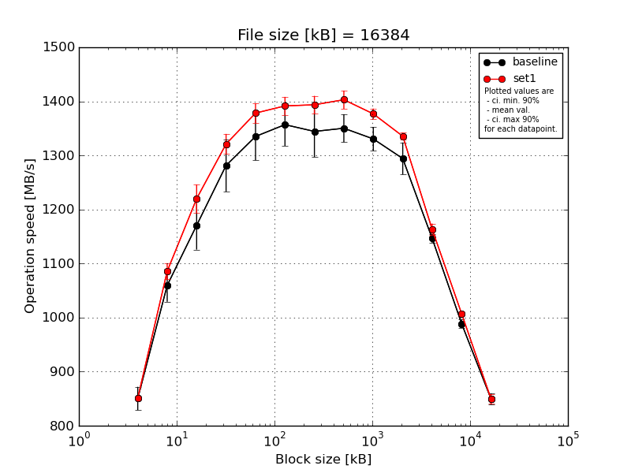
|
File size [kB] |
Block size [kB] |
| 4 |
8 |
16 |
32 |
64 |
128 |
256 |
512 |
1024 |
2048 |
4096 |
8192 |
16384 |
| baseline | 16384 | 889.24 | 1107.65 | 1243.11 | 1346.57 | 1394.56 | 1412.53 | 1410.57 | 1384.81 | 1358.68 | 1327.58 | 1160.41 | 998.26 | 861.37 |
| 16384 | 841.62 | 1067.73 | 1158.83 | 1311.8 | 1354.89 | 1376.12 | 1359.03 | 1360.77 | 1336.57 | 1317.72 | 1146.95 | 994.71 | 858.64 |
| 16384 | 845.17 | 1060.59 | 1186.68 | 1284.93 | 1334.44 | 1362.87 | 1359.17 | 1360.66 | 1335.45 | 1288.45 | 1141.87 | 976.63 | 846.34 |
| 16384 | 845.63 | 1032.53 | 1143.33 | 1219.99 | 1323.39 | 1320.68 | 1280.22 | 1325.27 | 1295.02 | 1247.96 | 1143.74 | 990.41 | 846.57 |
| 16384 | 830.09 | 1029.26 | 1121.16 | 1244.26 | 1268.03 | 1312.44 | 1312.88 | 1319.9 | 1326.82 | 1289.59 | 1138.95 | 984.0 | 833.77 |
| mean val. |
850.35 |
1059.55 |
1170.62 |
1281.51 |
1335.06 |
1356.93 |
1344.37 |
1350.28 |
1330.51 |
1294.26 |
1146.38 |
988.8 |
849.34 |
| standard dev. |
22.63 |
31.74 |
47.02 |
50.83 |
46.27 |
41.19 |
49.81 |
27.19 |
23.06 |
31.06 |
8.36 |
8.63 |
11.07 |
| ci. min. 90% |
828.78 |
1029.29 |
1125.8 |
1233.05 |
1290.95 |
1317.65 |
1296.89 |
1324.36 |
1308.52 |
1264.65 |
1138.41 |
980.57 |
838.78 |
| ci. max 90% |
871.92 |
1089.81 |
1215.45 |
1329.97 |
1379.18 |
1396.2 |
1391.86 |
1376.21 |
1352.5 |
1323.88 |
1154.36 |
997.03 |
859.89 |
| geom. mean |
850.11 |
1059.18 |
1169.88 |
1280.7 |
1334.42 |
1356.43 |
1343.64 |
1350.06 |
1330.35 |
1293.96 |
1146.36 |
988.77 |
849.28 |
| median |
845.17 |
1060.59 |
1158.83 |
1284.93 |
1334.44 |
1362.87 |
1359.03 |
1360.66 |
1335.45 |
1289.59 |
1143.74 |
990.41 |
846.57 |
| first quartile |
841.62 |
1032.53 |
1143.33 |
1244.26 |
1323.39 |
1320.68 |
1312.88 |
1325.27 |
1326.82 |
1288.45 |
1141.87 |
984.0 |
846.34 |
| third quartile |
845.63 |
1067.73 |
1186.68 |
1311.8 |
1354.89 |
1376.12 |
1359.17 |
1360.77 |
1336.57 |
1317.72 |
1146.95 |
994.71 |
858.64 |
| minimum |
830.09 |
1029.26 |
1121.16 |
1219.99 |
1268.03 |
1312.44 |
1280.22 |
1319.9 |
1295.02 |
1247.96 |
1138.95 |
976.63 |
833.77 |
| maximum |
889.24 |
1107.65 |
1243.11 |
1346.57 |
1394.56 |
1412.53 |
1410.57 |
1384.81 |
1358.68 |
1327.58 |
1160.41 |
998.26 |
861.37 |
| set1 | 16384 | 850.2 | 1087.1 | 1250.4 | 1331.45 | 1390.57 | 1415.18 | 1388.91 | 1410.06 | 1388.65 | 1346.57 | 1179.86 | 1012.84 | 847.19 |
| 16384 | 847.91 | 1079.25 | 1214.34 | 1288.03 | 1379.2 | 1400.67 | 1405.46 | 1372.94 | 1381.7 | 1329.13 | 1153.0 | 1001.75 | 835.07 |
| 16384 | 856.07 | 1095.82 | 1236.1 | 1338.25 | 1368.82 | 1391.29 | 1411.81 | 1410.95 | 1381.33 | 1331.13 | 1153.99 | 1010.94 | 855.52 |
| 16384 | 849.84 | 1103.53 | 1221.74 | 1320.55 | 1401.29 | 1381.07 | 1367.17 | 1403.13 | 1363.56 | 1337.69 | 1168.23 | 1003.96 | 850.84 |
| 16384 | 852.29 | 1062.91 | 1177.68 | 1327.26 | 1351.59 | 1369.85 | 1394.94 | 1418.2 | 1369.27 | 1333.43 | 1161.34 | 1006.68 | 859.38 |
| mean val. |
851.26 |
1085.72 |
1220.05 |
1321.11 |
1378.29 |
1391.61 |
1393.66 |
1403.06 |
1376.9 |
1335.59 |
1163.28 |
1007.23 |
849.6 |
| standard dev. |
3.1 |
15.68 |
27.43 |
19.58 |
19.26 |
17.48 |
17.28 |
17.66 |
10.21 |
6.91 |
11.13 |
4.64 |
9.34 |
| ci. min. 90% |
848.3 |
1070.78 |
1193.9 |
1302.45 |
1359.93 |
1374.95 |
1377.18 |
1386.22 |
1367.17 |
1329.0 |
1152.67 |
1002.81 |
840.69 |
| ci. max 90% |
854.22 |
1100.67 |
1246.2 |
1339.77 |
1396.65 |
1408.28 |
1410.13 |
1419.9 |
1386.63 |
1342.18 |
1173.89 |
1011.66 |
858.51 |
| geom. mean |
851.26 |
1085.63 |
1219.8 |
1320.99 |
1378.19 |
1391.53 |
1393.57 |
1402.97 |
1376.87 |
1335.58 |
1163.24 |
1007.23 |
849.56 |
| median |
850.2 |
1087.1 |
1221.74 |
1327.26 |
1379.2 |
1391.29 |
1394.94 |
1410.06 |
1381.33 |
1333.43 |
1161.34 |
1006.68 |
850.84 |
| first quartile |
849.84 |
1079.25 |
1214.34 |
1320.55 |
1368.82 |
1381.07 |
1388.91 |
1403.13 |
1369.27 |
1331.13 |
1153.99 |
1003.96 |
847.19 |
| third quartile |
852.29 |
1095.82 |
1236.1 |
1331.45 |
1390.57 |
1400.67 |
1405.46 |
1410.95 |
1381.7 |
1337.69 |
1168.23 |
1010.94 |
855.52 |
| minimum |
847.91 |
1062.91 |
1177.68 |
1288.03 |
1351.59 |
1369.85 |
1367.17 |
1372.94 |
1363.56 |
1329.13 |
1153.0 |
1001.75 |
835.07 |
| maximum |
856.07 |
1103.53 |
1250.4 |
1338.25 |
1401.29 |
1415.18 |
1411.81 |
1418.2 |
1388.65 |
1346.57 |
1179.86 |
1012.84 |
859.38 |
| baseline set1 difference |
0.11 % |
2.47 % |
4.22 % |
3.09 % |
3.24 % |
2.56 % |
3.67 % |
3.91 % |
3.49 % |
3.19 % |
1.47 % |
1.86 % |
0.03 % |
| ttest p-value |
0.9311 |
0.1369 |
0.0768 |
0.1427 |
0.0899 |
0.1213 |
0.07 |
0.0066 |
0.0034 |
0.0198 |
0.0265 |
0.003 |
0.9686 |
| ttest equality |
SAME |
SAME |
DIFF |
SAME |
DIFF |
SAME |
DIFF |
DIFF |
DIFF |
DIFF |
DIFF |
DIFF |
SAME |
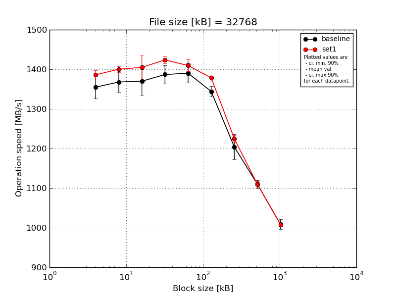
|
File size [kB] |
Block size [kB] |
| 64 |
128 |
256 |
512 |
1024 |
2048 |
4096 |
8192 |
16384 |
| baseline | 32768 | 1398.48 | 1398.73 | 1412.87 | 1412.06 | 1429.66 | 1365.95 | 1247.27 | 1122.88 | 1027.78 |
| 32768 | 1361.29 | 1371.98 | 1390.7 | 1409.88 | 1399.33 | 1348.27 | 1225.3 | 1119.55 | 1013.65 |
| 32768 | 1356.68 | 1383.19 | 1377.12 | 1388.53 | 1383.78 | 1341.88 | 1162.49 | 1104.17 | 999.69 |
| 32768 | 1344.94 | 1327.04 | 1354.85 | 1357.53 | 1366.53 | 1336.9 | 1201.42 | 1100.9 | 1005.75 |
| 32768 | 1313.31 | 1358.63 | 1314.28 | 1366.7 | 1371.1 | 1328.63 | 1183.74 | 1103.29 | 995.43 |
| mean val. |
1354.94 |
1367.91 |
1369.96 |
1386.94 |
1390.08 |
1344.33 |
1204.04 |
1110.16 |
1008.46 |
| standard dev. |
30.71 |
27.19 |
37.59 |
24.67 |
25.53 |
14.06 |
33.42 |
10.23 |
12.79 |
| ci. min. 90% |
1325.66 |
1341.99 |
1334.13 |
1363.42 |
1365.74 |
1330.92 |
1172.19 |
1100.4 |
996.27 |
| ci. max 90% |
1384.22 |
1393.83 |
1405.8 |
1410.46 |
1414.42 |
1357.73 |
1235.9 |
1119.91 |
1020.65 |
| geom. mean |
1354.66 |
1367.7 |
1369.55 |
1386.77 |
1389.89 |
1344.27 |
1203.67 |
1110.12 |
1008.39 |
| median |
1356.68 |
1371.98 |
1377.12 |
1388.53 |
1383.78 |
1341.88 |
1201.42 |
1104.17 |
1005.75 |
| first quartile |
1344.94 |
1358.63 |
1354.85 |
1366.7 |
1371.1 |
1336.9 |
1183.74 |
1103.29 |
999.69 |
| third quartile |
1361.29 |
1383.19 |
1390.7 |
1409.88 |
1399.33 |
1348.27 |
1225.3 |
1119.55 |
1013.65 |
| minimum |
1313.31 |
1327.04 |
1314.28 |
1357.53 |
1366.53 |
1328.63 |
1162.49 |
1100.9 |
995.43 |
| maximum |
1398.48 |
1398.73 |
1412.87 |
1412.06 |
1429.66 |
1365.95 |
1247.27 |
1122.88 |
1027.78 |
| set1 | 32768 | 1401.05 | 1394.21 | 1429.46 | 1417.94 | 1434.9 | 1378.77 | 1230.3 | 1096.83 | 1011.95 |
| 32768 | 1378.47 | 1398.05 | 1349.87 | 1427.49 | 1396.53 | 1372.99 | 1209.65 | 1109.92 | 1005.78 |
| 32768 | 1396.76 | 1410.76 | 1421.91 | 1429.16 | 1410.06 | 1386.18 | 1233.89 | 1118.14 | 1012.21 |
| 32768 | 1371.03 | 1392.27 | 1422.6 | 1433.05 | 1410.18 | 1368.05 | 1223.1 | 1108.03 | 1005.54 |
| 32768 | 1383.49 | 1405.66 | 1400.61 | 1411.56 | 1396.1 | 1387.02 | 1228.83 | 1116.96 | 1004.74 |
| mean val. |
1386.16 |
1400.19 |
1404.89 |
1423.84 |
1409.55 |
1378.6 |
1225.15 |
1109.98 |
1008.04 |
| standard dev. |
12.54 |
7.82 |
32.6 |
8.83 |
15.76 |
8.23 |
9.5 |
8.55 |
3.71 |
| ci. min. 90% |
1374.2 |
1392.73 |
1373.81 |
1415.42 |
1394.53 |
1370.75 |
1216.1 |
1101.83 |
1004.51 |
| ci. max 90% |
1398.12 |
1407.64 |
1435.98 |
1432.26 |
1424.58 |
1386.45 |
1234.21 |
1118.12 |
1011.58 |
| geom. mean |
1386.12 |
1400.17 |
1404.58 |
1423.82 |
1409.48 |
1378.58 |
1225.12 |
1109.95 |
1008.04 |
| median |
1383.49 |
1398.05 |
1421.91 |
1427.49 |
1410.06 |
1378.77 |
1228.83 |
1109.92 |
1005.78 |
| first quartile |
1378.47 |
1394.21 |
1400.61 |
1417.94 |
1396.53 |
1372.99 |
1223.1 |
1108.03 |
1005.54 |
| third quartile |
1396.76 |
1405.66 |
1422.6 |
1429.16 |
1410.18 |
1386.18 |
1230.3 |
1116.96 |
1011.95 |
| minimum |
1371.03 |
1392.27 |
1349.87 |
1411.56 |
1396.1 |
1368.05 |
1209.65 |
1096.83 |
1004.74 |
| maximum |
1401.05 |
1410.76 |
1429.46 |
1433.05 |
1434.9 |
1387.02 |
1233.89 |
1118.14 |
1012.21 |
| baseline set1 difference |
2.3 % |
2.36 % |
2.55 % |
2.66 % |
1.4 % |
2.55 % |
1.75 % |
-0.02 % |
-0.04 % |
| ttest p-value |
0.0685 |
0.0341 |
0.1551 |
0.0136 |
0.1847 |
0.0015 |
0.2113 |
0.9764 |
0.946 |
| ttest equality |
DIFF |
DIFF |
SAME |
DIFF |
SAME |
DIFF |
SAME |
SAME |
SAME |
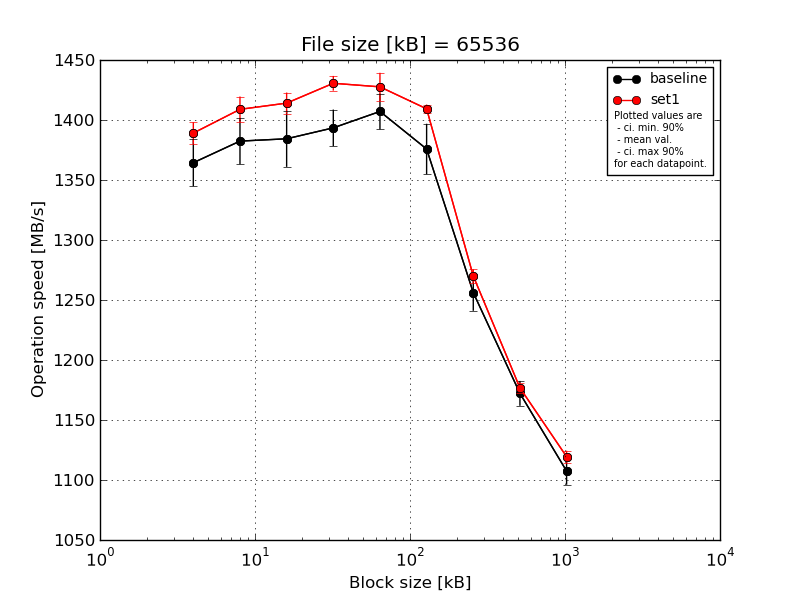
|
File size [kB] |
Block size [kB] |
| 64 |
128 |
256 |
512 |
1024 |
2048 |
4096 |
8192 |
16384 |
| baseline | 65536 | 1398.6 | 1412.02 | 1425.32 | 1418.25 | 1424.34 | 1408.11 | 1281.51 | 1183.76 | 1127.04 |
| 65536 | 1361.1 | 1392.3 | 1372.1 | 1400.01 | 1413.71 | 1370.63 | 1256.68 | 1175.3 | 1099.45 |
| 65536 | 1359.82 | 1375.34 | 1360.77 | 1384.5 | 1411.31 | 1346.77 | 1254.41 | 1172.65 | 1110.78 |
| 65536 | 1359.44 | 1372.86 | 1379.05 | 1386.28 | 1403.81 | 1372.45 | 1250.17 | 1174.96 | 1101.08 |
| 65536 | 1343.04 | 1359.53 | 1384.47 | 1378.28 | 1382.38 | 1381.09 | 1238.01 | 1154.26 | 1098.86 |
| mean val. |
1364.4 |
1382.41 |
1384.34 |
1393.46 |
1407.11 |
1375.81 |
1256.16 |
1172.19 |
1107.44 |
| standard dev. |
20.51 |
20.24 |
24.56 |
15.97 |
15.66 |
22.09 |
15.9 |
10.87 |
11.97 |
| ci. min. 90% |
1344.85 |
1363.11 |
1360.93 |
1378.24 |
1392.18 |
1354.74 |
1241.0 |
1161.82 |
1096.03 |
| ci. max 90% |
1383.95 |
1401.71 |
1407.76 |
1408.69 |
1422.04 |
1396.87 |
1271.32 |
1182.55 |
1118.85 |
| geom. mean |
1364.28 |
1382.29 |
1384.17 |
1393.39 |
1407.04 |
1375.67 |
1256.08 |
1172.15 |
1107.39 |
| median |
1359.82 |
1375.34 |
1379.05 |
1386.28 |
1411.31 |
1372.45 |
1254.41 |
1174.96 |
1101.08 |
| first quartile |
1359.44 |
1372.86 |
1372.1 |
1384.5 |
1403.81 |
1370.63 |
1250.17 |
1172.65 |
1099.45 |
| third quartile |
1361.1 |
1392.3 |
1384.47 |
1400.01 |
1413.71 |
1381.09 |
1256.68 |
1175.3 |
1110.78 |
| minimum |
1343.04 |
1359.53 |
1360.77 |
1378.28 |
1382.38 |
1346.77 |
1238.01 |
1154.26 |
1098.86 |
| maximum |
1398.6 |
1412.02 |
1425.32 |
1418.25 |
1424.34 |
1408.11 |
1281.51 |
1183.76 |
1127.04 |
| set1 | 65536 | 1380.03 | 1402.98 | 1420.83 | 1430.81 | 1442.58 | 1409.38 | 1278.95 | 1174.32 | 1118.88 |
| 65536 | 1394.58 | 1401.01 | 1410.13 | 1434.95 | 1408.54 | 1406.25 | 1265.29 | 1170.42 | 1112.81 |
| 65536 | 1397.77 | 1416.46 | 1419.66 | 1436.42 | 1429.97 | 1411.52 | 1272.77 | 1178.72 | 1126.04 |
| 65536 | 1377.77 | 1399.15 | 1420.2 | 1430.84 | 1426.28 | 1405.2 | 1265.37 | 1182.23 | 1116.42 |
| 65536 | 1395.34 | 1424.79 | 1399.55 | 1420.01 | 1430.74 | 1414.24 | 1267.5 | 1178.07 | 1122.96 |
| mean val. |
1389.1 |
1408.88 |
1414.07 |
1430.61 |
1427.62 |
1409.32 |
1269.98 |
1176.75 |
1119.42 |
| standard dev. |
9.42 |
11.2 |
9.23 |
6.42 |
12.3 |
3.72 |
5.87 |
4.52 |
5.23 |
| ci. min. 90% |
1380.12 |
1398.2 |
1405.27 |
1424.48 |
1415.9 |
1405.77 |
1264.39 |
1172.45 |
1114.44 |
| ci. max 90% |
1398.08 |
1419.56 |
1422.87 |
1436.73 |
1439.35 |
1412.87 |
1275.57 |
1181.06 |
1124.41 |
| geom. mean |
1389.07 |
1408.84 |
1414.05 |
1430.59 |
1427.58 |
1409.31 |
1269.97 |
1176.75 |
1119.41 |
| median |
1394.58 |
1402.98 |
1419.66 |
1430.84 |
1429.97 |
1409.38 |
1267.5 |
1178.07 |
1118.88 |
| first quartile |
1380.03 |
1401.01 |
1410.13 |
1430.81 |
1426.28 |
1406.25 |
1265.37 |
1174.32 |
1116.42 |
| third quartile |
1395.34 |
1416.46 |
1420.2 |
1434.95 |
1430.74 |
1411.52 |
1272.77 |
1178.72 |
1122.96 |
| minimum |
1377.77 |
1399.15 |
1399.55 |
1420.01 |
1408.54 |
1405.2 |
1265.29 |
1170.42 |
1112.81 |
| maximum |
1397.77 |
1424.79 |
1420.83 |
1436.42 |
1442.58 |
1414.24 |
1278.95 |
1182.23 |
1126.04 |
| baseline set1 difference |
1.81 % |
1.91 % |
2.15 % |
2.67 % |
1.46 % |
2.44 % |
1.1 % |
0.39 % |
1.08 % |
| ttest p-value |
0.0401 |
0.0337 |
0.0351 |
0.0013 |
0.0502 |
0.0102 |
0.1057 |
0.4111 |
0.0744 |
| ttest equality |
DIFF |
DIFF |
DIFF |
DIFF |
DIFF |
DIFF |
SAME |
SAME |
DIFF |
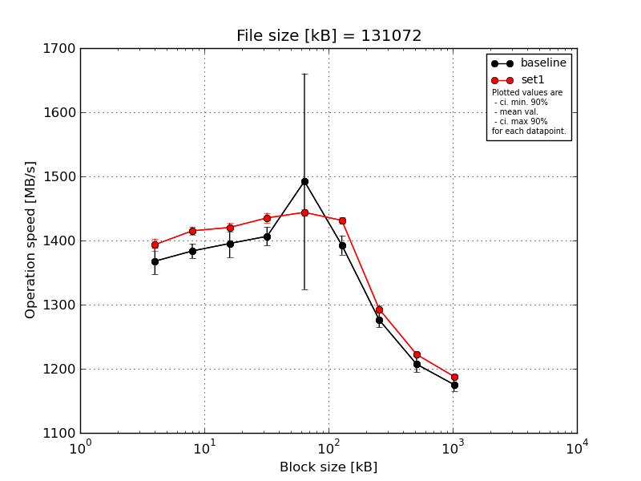
|
File size [kB] |
Block size [kB] |
| 64 |
128 |
256 |
512 |
1024 |
2048 |
4096 |
8192 |
16384 |
| baseline | 131072 | 1399.44 | 1403.4 | 1429.73 | 1432.33 | 1437.23 | 1413.79 | 1294.2 | 1230.41 | 1192.96 |
| 131072 | 1377.38 | 1385.62 | 1401.8 | 1406.49 | 1413.76 | 1405.45 | 1279.54 | 1202.76 | 1178.66 |
| 131072 | 1342.86 | 1374.01 | 1395.25 | 1392.86 | 1806.94 | 1382.32 | 1276.97 | 1203.83 | 1168.2 |
| 131072 | 1359.93 | 1375.93 | 1370.55 | 1401.48 | 1401.97 | 1378.42 | 1264.61 | 1200.95 | 1168.44 |
| 131072 | 1359.08 | 1379.64 | 1379.5 | 1399.53 | 1401.59 | 1384.37 | 1265.55 | 1197.54 | 1168.56 |
| mean val. |
1367.74 |
1383.72 |
1395.37 |
1406.54 |
1492.3 |
1392.87 |
1276.17 |
1207.1 |
1175.36 |
| standard dev. |
21.52 |
11.86 |
22.86 |
15.22 |
176.49 |
15.72 |
12.08 |
13.25 |
10.79 |
| ci. min. 90% |
1347.22 |
1372.41 |
1373.57 |
1392.03 |
1324.04 |
1377.88 |
1264.66 |
1194.47 |
1165.07 |
| ci. max 90% |
1388.26 |
1395.03 |
1417.16 |
1421.05 |
1660.56 |
1407.85 |
1287.69 |
1219.73 |
1185.65 |
| geom. mean |
1367.6 |
1383.68 |
1395.22 |
1406.47 |
1484.71 |
1392.8 |
1276.13 |
1207.04 |
1175.32 |
| median |
1359.93 |
1379.64 |
1395.25 |
1401.48 |
1413.76 |
1384.37 |
1276.97 |
1202.76 |
1168.56 |
| first quartile |
1359.08 |
1375.93 |
1379.5 |
1399.53 |
1401.97 |
1382.32 |
1265.55 |
1200.95 |
1168.44 |
| third quartile |
1377.38 |
1385.62 |
1401.8 |
1406.49 |
1437.23 |
1405.45 |
1279.54 |
1203.83 |
1178.66 |
| minimum |
1342.86 |
1374.01 |
1370.55 |
1392.86 |
1401.59 |
1378.42 |
1264.61 |
1197.54 |
1168.2 |
| maximum |
1399.44 |
1403.4 |
1429.73 |
1432.33 |
1806.94 |
1413.79 |
1294.2 |
1230.41 |
1192.96 |
| set1 | 131072 | 1402.92 | 1424.26 | 1413.64 | 1445.77 | 1452.73 | 1436.15 | 1301.04 | 1224.32 | 1185.98 |
| 131072 | 1384.95 | 1419.45 | 1411.97 | 1429.03 | 1440.21 | 1429.94 | 1287.2 | 1219.13 | 1192.99 |
| 131072 | 1395.63 | 1413.19 | 1427.42 | 1431.27 | 1438.64 | 1424.79 | 1292.31 | 1223.44 | 1184.11 |
| 131072 | 1402.23 | 1412.07 | 1427.26 | 1442.01 | 1442.66 | 1436.92 | 1287.56 | 1223.19 | 1190.51 |
| 131072 | 1381.89 | 1406.71 | 1421.38 | 1428.49 | 1445.17 | 1428.87 | 1296.86 | 1221.76 | 1186.39 |
| mean val. |
1393.52 |
1415.14 |
1420.34 |
1435.32 |
1443.88 |
1431.34 |
1292.99 |
1222.37 |
1188.0 |
| standard dev. |
9.72 |
6.82 |
7.31 |
8.01 |
5.53 |
5.13 |
5.98 |
2.03 |
3.64 |
| ci. min. 90% |
1384.26 |
1408.64 |
1413.36 |
1427.68 |
1438.61 |
1426.44 |
1287.29 |
1220.43 |
1184.52 |
| ci. max 90% |
1402.79 |
1421.64 |
1427.31 |
1442.95 |
1449.16 |
1436.23 |
1298.7 |
1224.3 |
1191.47 |
| geom. mean |
1393.5 |
1415.12 |
1420.32 |
1435.3 |
1443.87 |
1431.33 |
1292.98 |
1222.37 |
1187.99 |
| median |
1395.63 |
1413.19 |
1421.38 |
1431.27 |
1442.66 |
1429.94 |
1292.31 |
1223.19 |
1186.39 |
| first quartile |
1384.95 |
1412.07 |
1413.64 |
1429.03 |
1440.21 |
1428.87 |
1287.56 |
1221.76 |
1185.98 |
| third quartile |
1402.23 |
1419.45 |
1427.26 |
1442.01 |
1445.17 |
1436.15 |
1296.86 |
1223.44 |
1190.51 |
| minimum |
1381.89 |
1406.71 |
1411.97 |
1428.49 |
1438.64 |
1424.79 |
1287.2 |
1219.13 |
1184.11 |
| maximum |
1402.92 |
1424.26 |
1427.42 |
1445.77 |
1452.73 |
1436.92 |
1301.04 |
1224.32 |
1192.99 |
| baseline set1 difference |
1.89 % |
2.27 % |
1.79 % |
2.05 % |
-3.24 % |
2.76 % |
1.32 % |
1.26 % |
1.07 % |
| ttest p-value |
0.0405 |
0.0009 |
0.0484 |
0.0057 |
0.5568 |
0.0008 |
0.0235 |
0.0343 |
0.0381 |
| ttest equality |
DIFF |
DIFF |
DIFF |
DIFF |
SAME |
DIFF |
DIFF |
DIFF |
DIFF |
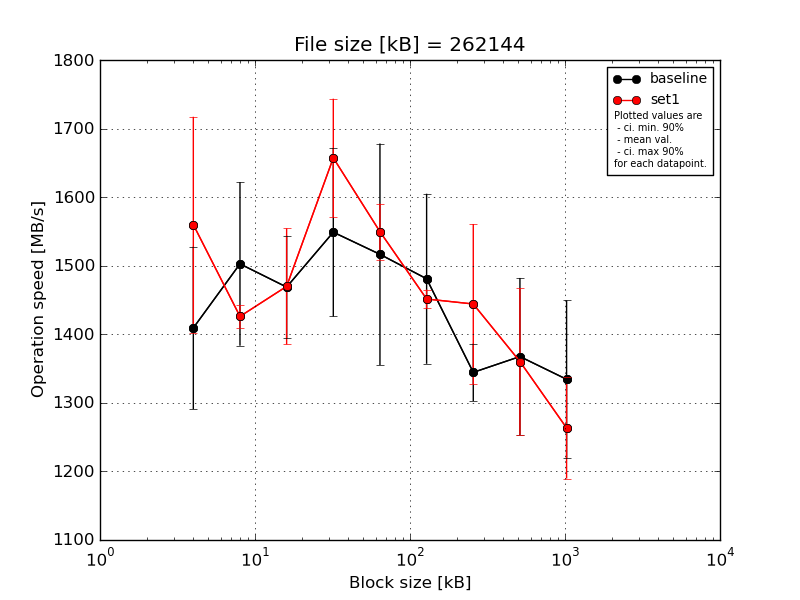
|
File size [kB] |
Block size [kB] |
| 64 |
128 |
256 |
512 |
1024 |
2048 |
4096 |
8192 |
16384 |
| baseline | 262144 | 1630.1 | 1667.92 | 1424.43 | 1607.44 | 1535.06 | 1433.09 | 1299.76 | 1238.84 | 1236.45 |
| 262144 | 1348.13 | 1385.46 | 1405.03 | 1421.82 | 1422.03 | 1418.67 | 1300.17 | 1505.69 | 1433.68 |
| 262144 | 1340.53 | 1538.18 | 1511.15 | 1404.53 | 1394.5 | 1428.93 | 1390.77 | 1332.76 | 1204.18 |
| 262144 | 1377.22 | 1552.77 | 1416.24 | 1613.86 | 1804.28 | 1410.99 | 1346.88 | 1278.52 | 1316.19 |
| 262144 | 1350.36 | 1369.04 | 1587.31 | 1696.79 | 1427.19 | 1713.17 | 1384.7 | 1481.76 | 1481.31 |
| mean val. |
1409.27 |
1502.67 |
1468.83 |
1548.89 |
1516.61 |
1480.97 |
1344.46 |
1367.51 |
1334.36 |
| standard dev. |
124.23 |
125.17 |
78.48 |
128.95 |
169.52 |
130.09 |
43.96 |
120.24 |
120.75 |
| ci. min. 90% |
1290.83 |
1383.34 |
1394.01 |
1425.95 |
1355.0 |
1356.94 |
1302.55 |
1252.88 |
1219.24 |
| ci. max 90% |
1527.71 |
1622.01 |
1543.66 |
1671.83 |
1678.23 |
1605.0 |
1386.37 |
1482.14 |
1449.48 |
| geom. mean |
1405.19 |
1498.51 |
1467.19 |
1544.55 |
1509.55 |
1476.72 |
1343.88 |
1363.32 |
1330.02 |
| median |
1350.36 |
1538.18 |
1424.43 |
1607.44 |
1427.19 |
1428.93 |
1346.88 |
1332.76 |
1316.19 |
| first quartile |
1348.13 |
1385.46 |
1416.24 |
1421.82 |
1422.03 |
1418.67 |
1300.17 |
1278.52 |
1236.45 |
| third quartile |
1377.22 |
1552.77 |
1511.15 |
1613.86 |
1535.06 |
1433.09 |
1384.7 |
1481.76 |
1433.68 |
| minimum |
1340.53 |
1369.04 |
1405.03 |
1404.53 |
1394.5 |
1410.99 |
1299.76 |
1238.84 |
1204.18 |
| maximum |
1630.1 |
1667.92 |
1587.31 |
1696.79 |
1804.28 |
1713.17 |
1390.77 |
1505.69 |
1481.31 |
| set1 | 262144 | 1593.09 | 1427.78 | 1628.06 | 1643.76 | 1588.75 | 1453.85 | 1507.66 | 1450.98 | 1239.38 |
| 262144 | 1771.65 | 1416.73 | 1431.54 | 1511.69 | 1483.64 | 1443.3 | 1310.15 | 1440.48 | 1222.21 |
| 262144 | 1394.61 | 1404.97 | 1435.44 | 1749.49 | 1551.63 | 1446.02 | 1548.38 | 1433.84 | 1229.2 |
| 262144 | 1647.44 | 1451.91 | 1437.02 | 1672.6 | 1586.26 | 1475.26 | 1542.42 | 1239.39 | 1401.4 |
| 262144 | 1392.64 | 1429.05 | 1417.25 | 1708.75 | 1537.88 | 1438.9 | 1312.21 | 1236.57 | 1224.82 |
| mean val. |
1559.89 |
1426.09 |
1469.86 |
1657.26 |
1549.63 |
1451.47 |
1444.16 |
1360.25 |
1263.4 |
| standard dev. |
165.0 |
17.41 |
88.78 |
90.51 |
42.92 |
14.37 |
122.39 |
111.79 |
77.42 |
| ci. min. 90% |
1402.58 |
1409.49 |
1385.22 |
1570.97 |
1508.71 |
1437.76 |
1327.48 |
1253.67 |
1189.59 |
| ci. max 90% |
1717.19 |
1442.68 |
1554.5 |
1743.55 |
1590.55 |
1465.17 |
1560.85 |
1466.83 |
1337.21 |
| geom. mean |
1552.9 |
1426.0 |
1467.82 |
1655.23 |
1549.15 |
1451.41 |
1439.93 |
1356.5 |
1261.6 |
| median |
1593.09 |
1427.78 |
1435.44 |
1672.6 |
1551.63 |
1446.02 |
1507.66 |
1433.84 |
1229.2 |
| first quartile |
1394.61 |
1416.73 |
1431.54 |
1643.76 |
1537.88 |
1443.3 |
1312.21 |
1239.39 |
1224.82 |
| third quartile |
1647.44 |
1429.05 |
1437.02 |
1708.75 |
1586.26 |
1453.85 |
1542.42 |
1440.48 |
1239.38 |
| minimum |
1392.64 |
1404.97 |
1417.25 |
1511.69 |
1483.64 |
1438.9 |
1310.15 |
1236.57 |
1222.21 |
| maximum |
1771.65 |
1451.91 |
1628.06 |
1749.49 |
1588.75 |
1475.26 |
1548.38 |
1450.98 |
1401.4 |
| baseline set1 difference |
10.69 % |
-5.1 % |
0.07 % |
7.0 % |
2.18 % |
-1.99 % |
7.42 % |
-0.53 % |
-5.32 % |
| ttest p-value |
0.1416 |
0.2124 |
0.985 |
0.1626 |
0.684 |
0.6278 |
0.1248 |
0.9237 |
0.3008 |
| ttest equality |
SAME |
SAME |
SAME |
SAME |
SAME |
SAME |
SAME |
SAME |
SAME |
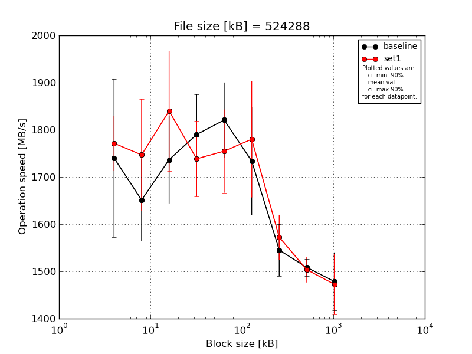
|
File size [kB] |
Block size [kB] |
| 64 |
128 |
256 |
512 |
1024 |
2048 |
4096 |
8192 |
16384 |
| baseline | 524288 | 1627.26 | 1719.37 | 1681.37 | 1781.67 | 1923.13 | 1924.6 | 1559.44 | 1487.37 | 1550.95 |
| 524288 | 1655.21 | 1602.34 | 1682.62 | 1653.84 | 1837.59 | 1776.54 | 1540.4 | 1523.85 | 1499.11 |
| 524288 | 1812.39 | 1776.0 | 1909.29 | 1872.45 | 1735.59 | 1643.39 | 1633.71 | 1532.28 | 1408.67 |
| 524288 | 2015.42 | 1591.09 | 1693.69 | 1771.86 | 1736.02 | 1638.69 | 1508.31 | 1496.02 | 1413.42 |
| 524288 | 1590.93 | 1567.84 | 1717.17 | 1870.48 | 1871.35 | 1686.61 | 1483.91 | 1502.98 | 1521.53 |
| mean val. |
1740.24 |
1651.33 |
1736.83 |
1790.06 |
1820.74 |
1733.97 |
1545.15 |
1508.5 |
1478.74 |
| standard dev. |
175.51 |
91.06 |
97.47 |
89.74 |
83.3 |
120.08 |
57.4 |
18.93 |
64.49 |
| ci. min. 90% |
1572.91 |
1564.51 |
1643.9 |
1704.5 |
1741.32 |
1619.48 |
1490.43 |
1490.45 |
1417.25 |
| ci. max 90% |
1907.57 |
1738.15 |
1829.76 |
1875.61 |
1900.16 |
1848.45 |
1599.87 |
1526.55 |
1540.22 |
| geom. mean |
1733.47 |
1649.35 |
1734.74 |
1788.23 |
1819.21 |
1730.75 |
1544.31 |
1508.41 |
1477.61 |
| median |
1655.21 |
1602.34 |
1693.69 |
1781.67 |
1837.59 |
1686.61 |
1540.4 |
1502.98 |
1499.11 |
| first quartile |
1627.26 |
1591.09 |
1682.62 |
1771.86 |
1736.02 |
1643.39 |
1508.31 |
1496.02 |
1413.42 |
| third quartile |
1812.39 |
1719.37 |
1717.17 |
1870.48 |
1871.35 |
1776.54 |
1559.44 |
1523.85 |
1521.53 |
| minimum |
1590.93 |
1567.84 |
1681.37 |
1653.84 |
1735.59 |
1638.69 |
1483.91 |
1487.37 |
1408.67 |
| maximum |
2015.42 |
1776.0 |
1909.29 |
1872.45 |
1923.13 |
1924.6 |
1633.71 |
1532.28 |
1550.95 |
| set1 | 524288 | 1719.59 | 1823.24 | 1833.29 | 1878.51 | 1758.26 | 1904.28 | 1567.85 | 1478.79 | 1425.75 |
| 524288 | 1734.91 | 1858.23 | 1943.92 | 1738.75 | 1683.42 | 1706.24 | 1638.82 | 1477.42 | 1428.93 |
| 524288 | 1852.77 | 1605.24 | 1614.65 | 1678.36 | 1647.78 | 1665.66 | 1498.67 | 1509.77 | 1553.45 |
| 524288 | 1729.02 | 1618.08 | 1876.16 | 1667.67 | 1876.03 | 1687.72 | 1576.02 | 1505.24 | 1539.1 |
| 524288 | 1821.6 | 1829.94 | 1931.76 | 1729.17 | 1808.95 | 1936.47 | 1580.96 | 1547.31 | 1416.96 |
| mean val. |
1771.58 |
1746.94 |
1839.96 |
1738.49 |
1754.89 |
1780.07 |
1572.46 |
1503.7 |
1472.84 |
| standard dev. |
61.14 |
124.28 |
133.56 |
84.15 |
92.45 |
129.38 |
49.89 |
28.52 |
67.38 |
| ci. min. 90% |
1713.29 |
1628.46 |
1712.62 |
1658.27 |
1666.75 |
1656.72 |
1524.9 |
1476.52 |
1408.6 |
| ci. max 90% |
1829.87 |
1865.43 |
1967.29 |
1818.71 |
1843.03 |
1903.43 |
1620.03 |
1530.89 |
1537.07 |
| geom. mean |
1770.74 |
1743.35 |
1835.87 |
1736.91 |
1752.95 |
1776.37 |
1571.83 |
1503.49 |
1471.62 |
| median |
1734.91 |
1823.24 |
1876.16 |
1729.17 |
1758.26 |
1706.24 |
1576.02 |
1505.24 |
1428.93 |
| first quartile |
1729.02 |
1618.08 |
1833.29 |
1678.36 |
1683.42 |
1687.72 |
1567.85 |
1478.79 |
1425.75 |
| third quartile |
1821.6 |
1829.94 |
1931.76 |
1738.75 |
1808.95 |
1904.28 |
1580.96 |
1509.77 |
1539.1 |
| minimum |
1719.59 |
1605.24 |
1614.65 |
1667.67 |
1647.78 |
1665.66 |
1498.67 |
1477.42 |
1416.96 |
| maximum |
1852.77 |
1858.23 |
1943.92 |
1878.51 |
1876.03 |
1936.47 |
1638.82 |
1547.31 |
1553.45 |
| baseline set1 difference |
1.8 % |
5.79 % |
5.94 % |
-2.88 % |
-3.62 % |
2.66 % |
1.77 % |
-0.32 % |
-0.4 % |
| ttest p-value |
0.716 |
0.2026 |
0.2006 |
0.376 |
0.2707 |
0.5753 |
0.4452 |
0.762 |
0.891 |
| ttest equality |
SAME |
SAME |
SAME |
SAME |
SAME |
SAME |
SAME |
SAME |
SAME |
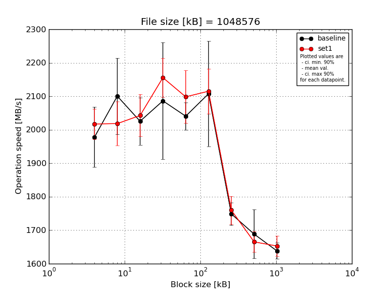
|
File size [kB] |
Block size [kB] |
| 64 |
128 |
256 |
512 |
1024 |
2048 |
4096 |
8192 |
16384 |
| baseline | 1048576 | 1960.32 | 2308.33 | 2136.4 | 2386.1 | 2008.17 | 1996.16 | 1778.81 | 1714.64 | 1626.5 |
| 1048576 | 1968.32 | 2087.36 | 1951.63 | 1934.59 | 2060.42 | 2038.56 | 1726.66 | 1619.25 | 1626.3 |
| 1048576 | 1915.58 | 2055.09 | 2042.08 | 1943.27 | 1986.45 | 2042.3 | 1795.65 | 1636.49 | 1616.94 |
| 1048576 | 2139.86 | 2023.42 | 1962.9 | 2098.69 | 2093.22 | 2398.94 | 1724.99 | 1662.33 | 1681.3 |
| 1048576 | 1906.39 | 2027.99 | 2034.49 | 2068.96 | 2054.45 | 2061.28 | 1717.48 | 1809.37 | 1640.29 |
| mean val. |
1978.1 |
2100.44 |
2025.5 |
2086.32 |
2040.54 |
2107.45 |
1748.72 |
1688.41 |
1638.27 |
| standard dev. |
94.38 |
118.98 |
74.21 |
182.9 |
42.83 |
164.68 |
35.82 |
76.61 |
25.46 |
| ci. min. 90% |
1888.12 |
1987.0 |
1954.75 |
1911.95 |
1999.71 |
1950.45 |
1714.56 |
1615.37 |
1614.0 |
| ci. max 90% |
2068.08 |
2213.88 |
2096.25 |
2260.69 |
2081.37 |
2264.45 |
1782.87 |
1761.46 |
1662.54 |
| geom. mean |
1976.35 |
2097.86 |
2024.42 |
2080.19 |
2040.18 |
2102.61 |
1748.43 |
1687.05 |
1638.11 |
| median |
1960.32 |
2055.09 |
2034.49 |
2068.96 |
2054.45 |
2042.3 |
1726.66 |
1662.33 |
1626.5 |
| first quartile |
1915.58 |
2027.99 |
1962.9 |
1943.27 |
2008.17 |
2038.56 |
1724.99 |
1636.49 |
1626.3 |
| third quartile |
1968.32 |
2087.36 |
2042.08 |
2098.69 |
2060.42 |
2061.28 |
1778.81 |
1714.64 |
1640.29 |
| minimum |
1906.39 |
2023.42 |
1951.63 |
1934.59 |
1986.45 |
1996.16 |
1717.48 |
1619.25 |
1616.94 |
| maximum |
2139.86 |
2308.33 |
2136.4 |
2386.1 |
2093.22 |
2398.94 |
1795.65 |
1809.37 |
1681.3 |
| set1 | 1048576 | 1958.04 | 1981.28 | 2070.1 | 2075.68 | 2018.14 | 2155.82 | 1761.38 | 1678.69 | 1651.8 |
| 1048576 | 2030.61 | 2132.86 | 1991.82 | 2160.94 | 2003.41 | 2139.05 | 1807.33 | 1645.86 | 1685.05 |
| 1048576 | 2087.25 | 1969.0 | 2145.91 | 2118.48 | 2181.91 | 1990.13 | 1703.31 | 1618.86 | 1633.26 |
| 1048576 | 1999.46 | 1977.11 | 1994.53 | 2228.49 | 2128.5 | 2132.92 | 1795.87 | 1688.85 | 1682.89 |
| 1048576 | 2011.25 | 2031.35 | 2011.37 | 2194.8 | 2159.72 | 2157.37 | 1730.92 | 1693.84 | 1611.09 |
| mean val. |
2017.32 |
2018.32 |
2042.75 |
2155.68 |
2098.34 |
2115.06 |
1759.76 |
1665.22 |
1652.82 |
| standard dev. |
47.27 |
68.54 |
65.75 |
60.51 |
82.32 |
70.63 |
43.56 |
31.95 |
31.89 |
| ci. min. 90% |
1972.25 |
1952.97 |
1980.06 |
2097.99 |
2019.85 |
2047.72 |
1718.24 |
1634.76 |
1622.42 |
| ci. max 90% |
2062.39 |
2083.67 |
2105.43 |
2213.36 |
2176.82 |
2182.39 |
1801.29 |
1695.68 |
1683.22 |
| geom. mean |
2016.88 |
2017.41 |
2041.91 |
2154.99 |
2097.03 |
2114.09 |
1759.33 |
1664.98 |
1652.57 |
| median |
2011.25 |
1981.28 |
2011.37 |
2160.94 |
2128.5 |
2139.05 |
1761.38 |
1678.69 |
1651.8 |
| first quartile |
1999.46 |
1977.11 |
1994.53 |
2118.48 |
2018.14 |
2132.92 |
1730.92 |
1645.86 |
1633.26 |
| third quartile |
2030.61 |
2031.35 |
2070.1 |
2194.8 |
2159.72 |
2155.82 |
1795.87 |
1688.85 |
1682.89 |
| minimum |
1958.04 |
1969.0 |
1991.82 |
2075.68 |
2003.41 |
1990.13 |
1703.31 |
1618.86 |
1611.09 |
| maximum |
2087.25 |
2132.86 |
2145.91 |
2228.49 |
2181.91 |
2157.37 |
1807.33 |
1693.84 |
1685.05 |
| baseline set1 difference |
1.98 % |
-3.91 % |
0.85 % |
3.32 % |
2.83 % |
0.36 % |
0.63 % |
-1.37 % |
0.89 % |
| ttest p-value |
0.4301 |
0.2179 |
0.7075 |
0.4441 |
0.2012 |
0.9267 |
0.673 |
0.5495 |
0.4482 |
| ttest equality |
SAME |
SAME |
SAME |
SAME |
SAME |
SAME |
SAME |
SAME |
SAME |
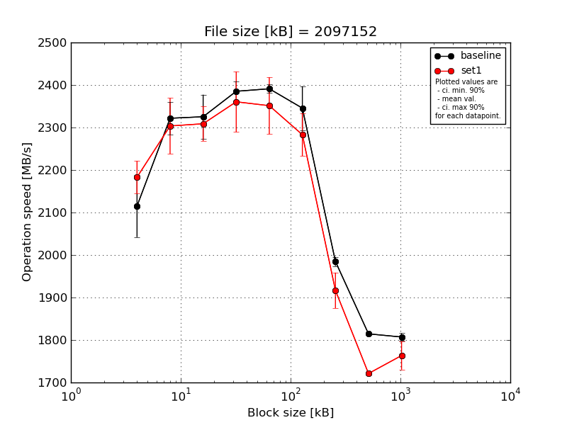
|
File size [kB] |
Block size [kB] |
| 64 |
128 |
256 |
512 |
1024 |
2048 |
4096 |
8192 |
16384 |
| baseline | 2097152 | 2061.32 | 2343.58 | 2312.92 | 2422.88 | 2406.75 | 2390.99 | 1983.39 | 1814.32 | 1793.45 |
| 2097152 | 2006.32 | 2347.07 | 2382.83 | 2363.54 | 2379.2 | 2356.42 | 1986.4 | 1810.73 | 1803.11 |
| 2097152 | 2171.39 | 2251.21 | 2238.63 | 2378.93 | 2392.46 | 2345.31 | 1966.45 | 1816.71 | 1816.98 |
| 2097152 | 2171.16 | 2337.23 | 2346.66 | 2393.35 | 2383.8 | 2254.44 | 1993.17 | 1812.94 | 1813.66 |
| 2097152 | 2165.77 | 2329.71 | 2345.72 | 2367.2 | 2393.6 | 2380.78 | 1994.3 | 1817.66 | 1808.03 |
| mean val. |
2115.19 |
2321.76 |
2325.35 |
2385.18 |
2391.16 |
2345.59 |
1984.74 |
1814.47 |
1807.05 |
| standard dev. |
76.82 |
39.99 |
54.43 |
24.08 |
10.58 |
54.14 |
11.2 |
2.81 |
9.27 |
| ci. min. 90% |
2041.95 |
2283.63 |
2273.46 |
2362.23 |
2381.07 |
2293.97 |
1974.07 |
1811.8 |
1798.21 |
| ci. max 90% |
2188.43 |
2359.88 |
2377.24 |
2408.14 |
2401.25 |
2397.2 |
1995.42 |
1817.15 |
1815.89 |
| geom. mean |
2114.06 |
2321.48 |
2324.84 |
2385.08 |
2391.14 |
2345.08 |
1984.72 |
1814.47 |
1807.03 |
| median |
2165.77 |
2337.23 |
2345.72 |
2378.93 |
2392.46 |
2356.42 |
1986.4 |
1814.32 |
1808.03 |
| first quartile |
2061.32 |
2329.71 |
2312.92 |
2367.2 |
2383.8 |
2345.31 |
1983.39 |
1812.94 |
1803.11 |
| third quartile |
2171.16 |
2343.58 |
2346.66 |
2393.35 |
2393.6 |
2380.78 |
1993.17 |
1816.71 |
1813.66 |
| minimum |
2006.32 |
2251.21 |
2238.63 |
2363.54 |
2379.2 |
2254.44 |
1966.45 |
1810.73 |
1793.45 |
| maximum |
2171.39 |
2347.07 |
2382.83 |
2422.88 |
2406.75 |
2390.99 |
1994.3 |
1817.66 |
1816.98 |
| set1 | 2097152 | 2212.23 | 2339.69 | 2277.99 | 2300.44 | 2307.62 | 2250.59 | 1969.36 | 1716.57 | 1757.17 |
| 2097152 | 2215.38 | 2221.04 | 2381.65 | 2291.51 | 2312.45 | 2208.35 | 1878.4 | 1726.29 | 1740.13 |
| 2097152 | 2126.55 | 2400.75 | 2280.06 | 2456.91 | 2317.53 | 2312.54 | 1870.67 | 1716.43 | 1823.28 |
| 2097152 | 2155.03 | 2268.39 | 2297.73 | 2331.55 | 2474.34 | 2337.14 | 1912.1 | 1723.6 | 1738.11 |
| 2097152 | 2206.35 | 2288.18 | 2306.56 | 2422.03 | 2344.76 | 2306.66 | 1952.97 | 1722.74 | 1758.5 |
| mean val. |
2183.11 |
2303.61 |
2308.8 |
2360.49 |
2351.34 |
2283.06 |
1916.7 |
1721.13 |
1763.44 |
| standard dev. |
40.05 |
68.99 |
42.46 |
74.64 |
70.25 |
52.41 |
43.86 |
4.42 |
34.75 |
| ci. min. 90% |
2144.92 |
2237.84 |
2268.32 |
2289.33 |
2284.36 |
2233.09 |
1874.88 |
1716.91 |
1730.31 |
| ci. max 90% |
2221.3 |
2369.38 |
2349.28 |
2431.65 |
2418.32 |
2333.02 |
1958.52 |
1725.34 |
1796.57 |
| geom. mean |
2182.81 |
2302.79 |
2308.49 |
2359.55 |
2350.52 |
2282.57 |
1916.3 |
1721.12 |
1763.17 |
| median |
2206.35 |
2288.18 |
2297.73 |
2331.55 |
2317.53 |
2306.66 |
1912.1 |
1722.74 |
1757.17 |
| first quartile |
2155.03 |
2268.39 |
2280.06 |
2300.44 |
2312.45 |
2250.59 |
1878.4 |
1716.57 |
1740.13 |
| third quartile |
2212.23 |
2339.69 |
2306.56 |
2422.03 |
2344.76 |
2312.54 |
1952.97 |
1723.6 |
1758.5 |
| minimum |
2126.55 |
2221.04 |
2277.99 |
2291.51 |
2307.62 |
2208.35 |
1870.67 |
1716.43 |
1738.11 |
| maximum |
2215.38 |
2400.75 |
2381.65 |
2456.91 |
2474.34 |
2337.14 |
1969.36 |
1726.29 |
1823.28 |
| baseline set1 difference |
3.21 % |
-0.78 % |
-0.71 % |
-1.04 % |
-1.67 % |
-2.67 % |
-3.43 % |
-5.14 % |
-2.41 % |
| ttest p-value |
0.1177 |
0.6245 |
0.6064 |
0.5014 |
0.2455 |
0.1006 |
0.0099 |
0.0 |
0.0266 |
| ttest equality |
SAME |
SAME |
SAME |
SAME |
SAME |
SAME |
DIFF |
DIFF |
DIFF |
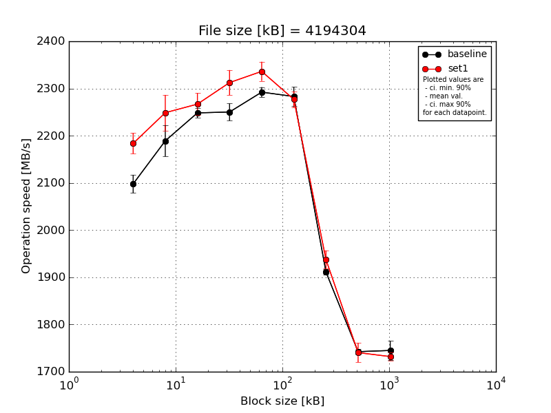
|
File size [kB] |
Block size [kB] |
| 64 |
128 |
256 |
512 |
1024 |
2048 |
4096 |
8192 |
16384 |
| baseline | 4194304 | 2128.81 | 2172.46 | 2256.05 | 2270.64 | 2288.67 | 2288.93 | 1912.66 | 1744.95 | 1749.49 |
| 4194304 | 2101.04 | 2177.59 | 2241.09 | 2220.5 | 2278.23 | 2317.31 | 1911.22 | 1740.0 | 1741.73 |
| 4194304 | 2077.74 | 2148.52 | 2250.17 | 2244.23 | 2293.6 | 2265.64 | 1901.04 | 1745.89 | 1714.79 |
| 4194304 | 2081.93 | 2237.98 | 2234.09 | 2256.7 | 2291.82 | 2270.28 | 1912.76 | 1747.46 | 1744.36 |
| 4194304 | 2099.86 | 2209.24 | 2260.2 | 2258.98 | 2309.24 | 2273.06 | 1918.36 | 1733.92 | 1774.67 |
| mean val. |
2097.87 |
2189.16 |
2248.32 |
2250.21 |
2292.31 |
2283.04 |
1911.21 |
1742.44 |
1745.01 |
| standard dev. |
20.19 |
34.82 |
10.71 |
19.07 |
11.18 |
21.06 |
6.31 |
5.53 |
21.36 |
| ci. min. 90% |
2078.62 |
2155.96 |
2238.11 |
2232.03 |
2281.65 |
2262.97 |
1905.2 |
1737.18 |
1724.64 |
| ci. max 90% |
2117.12 |
2222.36 |
2258.54 |
2268.39 |
2302.98 |
2303.12 |
1917.22 |
1747.71 |
1765.37 |
| geom. mean |
2097.8 |
2188.94 |
2248.3 |
2250.14 |
2292.29 |
2282.97 |
1911.2 |
1742.44 |
1744.9 |
| median |
2099.86 |
2177.59 |
2250.17 |
2256.7 |
2291.82 |
2273.06 |
1912.66 |
1744.95 |
1744.36 |
| first quartile |
2081.93 |
2172.46 |
2241.09 |
2244.23 |
2288.67 |
2270.28 |
1911.22 |
1740.0 |
1741.73 |
| third quartile |
2101.04 |
2209.24 |
2256.05 |
2258.98 |
2293.6 |
2288.93 |
1912.76 |
1745.89 |
1749.49 |
| minimum |
2077.74 |
2148.52 |
2234.09 |
2220.5 |
2278.23 |
2265.64 |
1901.04 |
1733.92 |
1714.79 |
| maximum |
2128.81 |
2237.98 |
2260.2 |
2270.64 |
2309.24 |
2317.31 |
1918.36 |
1747.46 |
1774.67 |
| set1 | 4194304 | 2176.62 | 2218.02 | 2261.05 | 2279.37 | 2310.69 | 2272.53 | 1928.13 | 1721.47 | 1728.06 |
| 4194304 | 2196.56 | 2317.41 | 2303.74 | 2328.59 | 2334.25 | 2251.55 | 1971.68 | 1718.34 | 1721.82 |
| 4194304 | 2159.41 | 2242.09 | 2239.34 | 2306.14 | 2362.97 | 2291.97 | 1921.06 | 1737.34 | 1744.88 |
| 4194304 | 2169.24 | 2237.69 | 2276.33 | 2297.58 | 2352.02 | 2295.49 | 1939.13 | 1759.88 | 1728.27 |
| 4194304 | 2216.68 | 2228.38 | 2254.2 | 2350.89 | 2321.6 | 2273.03 | 1927.61 | 1765.12 | 1737.18 |
| mean val. |
2183.7 |
2248.72 |
2266.93 |
2312.52 |
2336.31 |
2276.91 |
1937.52 |
1740.43 |
1732.04 |
| standard dev. |
22.92 |
39.5 |
24.5 |
27.81 |
21.42 |
17.67 |
20.17 |
21.48 |
9.02 |
| ci. min. 90% |
2161.84 |
2211.06 |
2243.57 |
2286.0 |
2315.89 |
2260.06 |
1918.29 |
1719.95 |
1723.44 |
| ci. max 90% |
2205.56 |
2286.37 |
2290.29 |
2339.03 |
2356.72 |
2293.76 |
1956.75 |
1760.9 |
1740.64 |
| geom. mean |
2183.6 |
2248.44 |
2266.83 |
2312.38 |
2336.23 |
2276.86 |
1937.44 |
1740.32 |
1732.02 |
| median |
2176.62 |
2237.69 |
2261.05 |
2306.14 |
2334.25 |
2273.03 |
1928.13 |
1737.34 |
1728.27 |
| first quartile |
2169.24 |
2228.38 |
2254.2 |
2297.58 |
2321.6 |
2272.53 |
1927.61 |
1721.47 |
1728.06 |
| third quartile |
2196.56 |
2242.09 |
2276.33 |
2328.59 |
2352.02 |
2291.97 |
1939.13 |
1759.88 |
1737.18 |
| minimum |
2159.41 |
2218.02 |
2239.34 |
2279.37 |
2310.69 |
2251.55 |
1921.06 |
1718.34 |
1721.82 |
| maximum |
2216.68 |
2317.41 |
2303.74 |
2350.89 |
2362.97 |
2295.49 |
1971.68 |
1765.12 |
1744.88 |
| baseline set1 difference |
4.09 % |
2.72 % |
0.83 % |
2.77 % |
1.92 % |
-0.27 % |
1.38 % |
-0.12 % |
-0.74 % |
| ttest p-value |
0.0002 |
0.0353 |
0.1583 |
0.0033 |
0.0036 |
0.6314 |
0.0238 |
0.8441 |
0.2465 |
| ttest equality |
DIFF |
DIFF |
SAME |
DIFF |
DIFF |
SAME |
DIFF |
SAME |
SAME |